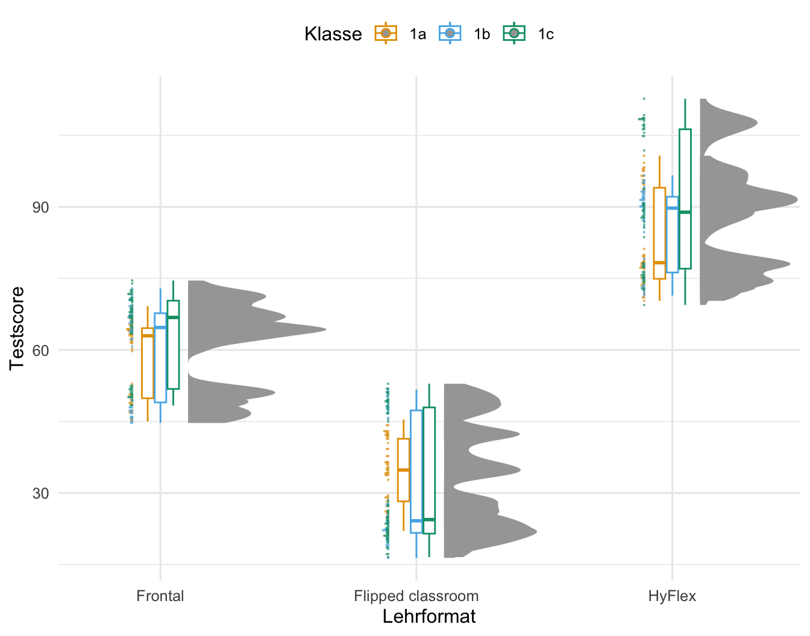
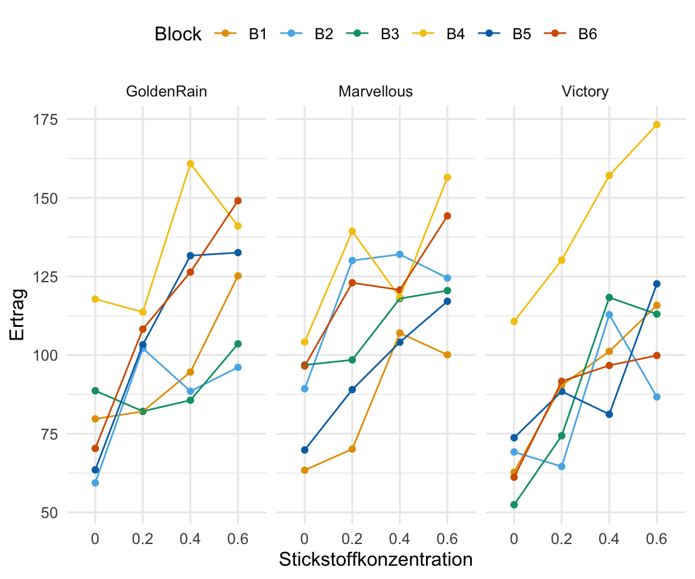

flowchart LR
C(Behandlungen):::fixed --- D(((nested))) --> E(Tische):::random --- F(((nested))) --> G(Gewächshäuser):::random
classDef fixed fill:#56B4E9,stroke:#333,stroke-width:0.75px
classDef random fill:#E69F00,stroke:#333,stroke-width:0.75px
49 Lineare gemischte Modelle
Letzte Änderung am 17. December 2023 um 21:17:49

“Wer die Arbeit kennt und sich nicht drückt, der ist verrückt.” — Tick, Trick und Track
In diesem Kapitel vollen wir die Grundzüge der lineare gemischten Modell (eng. linear mixed models, abk. lmm) zu versuchen zu verstehen. Wir immer, es gibt dazu auch hervorragende Literatur wie das sehr ausführliche Buch von Zuur u. a. (2009). Fangen wir also einmal an zu verstehen, wie eigentlich ein Experiment aussehen muss, damit wir ein lineares gemischtes Modell rechnen wollen. Dabei ist der erste wichtige Punkt, das wir hier mit den gemischten Modellen hierarchische Daten abbilden. Es gibt also eine Hierarchie zwischen den Daten und damit auch eine Abhängigkeit innerhalb der Daten. Eine Abhängigkeit ist in der Statistik eine Korrelationsstruktur. Hier konzentrieren wir uns auf agrarwissenschaftliche Daten. Wir haben dabei in den Agarwissenschaften unser \(x\) als Faktoren \(f\) vorliegen. Für das \(y\) können aber jeden Messwert als Outcome abbilden den wir wollen. Dafür gibt es dann zum Beispiel die Funktion glmer(), die das Äquivalent zu der Funktion glm() ist.

Dieses Kapitel ist mathematisch und statistisch teilweise inkorrekt. Insbesondere die Modelle unterschlagen Fehlerterme und andere Aspekte der Korrelationstruktur von hierarischen Daten. Aber wie immer… erst einfach verstehen, dann komplizierter nachlesen.
Wir haben also folgendes, mehrfaktorielles Modell vorliegen. Diese Faktoren haben teilweise eine Hierarchie, die wir dann modellieren wollen.
\[ y \sim f_1 + f_2 + z_1 + z_2 \]
Und eigentlich haben wir ja gar nicht vier gleichwertige Faktoren vorliegen, sondern meistens unsere Behandlungsfaktor \(f_1\) und \(f_2\) an dem wir interessiert sind und dann noch bis zu zwei weitere Faktoren \(z_1\) und \(z_2\), die eine weitere Gruppierung repräsentieren. Wir können auch noch mehr Faktoren vorliegen haben, aber ich empfehle ein Design immer auf maximal vier Faktoren zu begrenzen. Unsere beiden Faktoren \(z_1\) und \(z_2\) beschreiben jetzt aber nicht noch mehr Behandlungen sondern stellen ein Feld, einen Block oder aber einen Stall dar. Wir haben es also mit Faktoren für eine “Position” zu tun. Die Position kann auch eine zeitliche Komponente sein. Deshalb schreiben wir etwas allgemeiner für die Faktoren \(z_1\) und \(z_2\) auch als “zufällige” Effekte. Wie schon erwähnt es handelt sich nicht ausschließlich um Blöcke, es können auch andere Positionen in Raum und Zeit sein. Es geht immer mehr und manchmal braucht man auch mehr Faktoren, aber in unserem Kontext hier würde ich anraten sich auf eher auf drei Faktoren zu begrenzen. Also entweder zwei Behandlungsfaktoren \(f_1\) sowie \(f_2\) und ein Positionsfaktor \(z_1\) oder aber ein Behandlungsfaktor \(f_1\) und zwei Positionsfaktoren \(z_1\) sowie \(z_2\).
Als wäre das nicht kompliziert genug, haben wir meistens auch noch verschachtelte (eng. nested) Daten vorliegen. Damit meine ich, dass wir den Faktor \(z_1\) in jedem Level des Faktors \(z_2\) vorliegen haben. Wir können eben verschiedene Standorte als Faktor \(z_2\) betrachten und an jedem der Standorte haben wir Blöcke \(z_1\) vorliegen. Mehr dazu findest du dann auch in dem Kapitel Versuchsplanung in R und gleich nochmal weiter unten im Text.
Welche R Implementierung verwenden?
In diesem Kapitel werden wir nicht die Implementierung von linearen gemischten Modellen in dem R Paket {nlme} verwenden. Das Paket {nlme} hat sinnvolle Funktionen und je nach Fragestellung haben diese auch eine Berechtigung. Es gibt aber neuere R Pakete wie {lme4} oder {glmmTMB}, die wir dann hier in dem Kapitel nutzen wollen wenn es um statistsiche Analyse mit linearen gemischten Modellen geht..
Was ist nun das Besondere an einem linearen gemischten Modell? Wie der Name schon sagt, haben wir irgendwas gemischt. Glücklicherweise mischen wir nur zwei Dinge miteinander. Wir mischen hier feste Effekte (eng. fixed effect) und zufällige Effekte (eng. random effect) miteinander. Bis jetzt kennst du eigentlich nur feste Effekte. Immer wenn wir ein Modell gebaut haben, dann haben wir das Modell mit festen Effekten gebaut. Wir haben dabei Fakotoren als feste Effekte modelliert. Was ist also nun der Unterschied zwischen der Wahl einen Faktor als festen Effekt oder zufälligen Effekt anzusehen? Zuerst ist dies eine Modellierungsentscheidung. Wir müssen uns also zwischen Arten von Modellen unterscheiden. Daher können wir auch verschiedene Modelle mit unterschiedlichen Anzahlen an Faktoren bauen und dann diese Modelle vergleichen. Welcher Faktor jetzt als fester Effekt und welcher als zufälliger Effekt gilt, liegt dabei an uns.
Die Idee hinter dem Modell mit festen Effekten ist, dass die beobachteten Effektgrößen von Block zu Block variieren können, was aber nur auf den Varianz der Blöcke zurückzuführen ist. In Wirklichkeit sind die wahren Effektgrößen alle gleich: Sie sind fix. Alle Blöcke haben den gleichen Mittelwert und variieren nur in der Varianz. Wir sehen aber diesen wahren Mittelwert nicht, da sich alle Blöcke eben immer leicht unterscheiden. Mehr dazu auch in The Fixed-Effect Model)
Das Modell der zufälligen Effekte geht davon aus, dass es nicht nur eine wahre Effektgröße gibt, sondern eine Verteilung der wahren Effektgrößen. Jeder unserer Blöcke kann also einen anderen wahren Mittelwert haben. Das Ziel des Modells mit zufälligen Effekten ist es daher nicht, die eine wahre Effektgröße aller Blöcke zu schätzen, sondern den Mittelwert der Verteilung der wahren Effekte. Mehr dazu auch in The Random-Effect Model)
Dabei verbinden die gemischten Modelle die Vorteile eines Modells mit festen Effekt sowie eines Modells mit zufälligen Effekten. Lineare gemischte Modelle schätzen nun die subjektspezifischen Auswirkungen (eng. subject-specific) auf die Varianz eines Versuches. Dabei kommt es häufig darauf an unter welchen Umständen eine Beobachtung gemessen wurde. Stehen die Pflanze zusammen auf einem Feld? Sind die Ferkel alle Nachkommen einer Sau? Daher erweitern wir unser lineare Modell um einen zufälligen Effekt \(z\) und schreiben wie folgt.
\[ y \sim f_1 + 1|z_1 \]
Wir schreiben in R den Term für da zufällige Modell in der Form \(z_0|z_1\). Meist setzen wir den Intercept \(z_0\) für den zufälligen Effekt auf 1. Wenn wir darstellen wollen, das ein zufälliger Faktor in einem anderen zufälligen Fakotr genestet ist, dann schreiben wir 1|z_1/z_2.
\[ y \sim f_1 + 1|z_1/z_2 \]
Das heißt, dass der zufällige Blockfaktor \(z_1\) in den zufälligen Blockfaktor \(z_2\) genestet ist. Das klingt jetzt etwas schräg, also einmal ein Beispiel. Wir haben eine Schule, dann sind die Schulklassen dieser Schule in der Schule genestet. Es gibt diese spezifischen Klassen mit den Schülern schlichtweg nicht in anderen Schulen. Wir sagen genestet (eng. nested), wenn wir sagen wollen, dass ein Faktor in einen anderen Faktor verschränkt ist. Die Klassen einer Schule sind in der Schule genestet.
In der Abbildung 49.1 siehst du einmal exemplarisch die Darstellung eines experimentellen Designs mit drei Faktoren. Die Behandlung ist dabei ein fester Effekt und die beiden Faktoren für die Tische und die Gewächshäuser sind zufällige Effekte. Damit wir in der Folge nicht immer so sehr durcheinander kommen, habe ich die festen Effekt als blau Kästen und die zufälligen Effekte als orange Kästen gesetzt.
Okay, das ist jetzt bis hierher sehr abstrakt. Machen wir das mal konkret mit einem Beispiel mit drei Behandlungen gegen Blattläuse auf jeweils vier Tischen in drei Gewächshäusern. Pro Behandlung nehmen wir fünf Pflanzen. Damit ergibt sich folgendes Schema der Abhängigkeiten mit den jeweiligen Anzahlen.
\[ \overbrace{\mbox{Gewächshauser}}^{n_g = 3} \xrightarrow[alle]{beinhaltet} \underbrace{\mbox{Tische}}_{n_t = 4} \xrightarrow[alle]{beinhaltet} \overbrace{\mbox{Behandlungen}}^{n_b = 3} \xrightarrow[alle]{beinhaltet} \underbrace{\mbox{Beobachtungen}}_{n_w = 5} \]
Wie du an dem obigen Beispiel sehen kannst, kommen wir bei linearen gemischten Modellen sehr schnell auf sehr große Fallzahlen. Wir haben im obigen, kleinen Beispiel alleine schon eine Fallzahl von \(n_{gesamt} = 3 \times 4 \times 3 \times 5 = 180\) Pflanzen. Und damit ist eigentlich unser Beispiel sehr klein gewählt. Eigentlich brauchen wir für einen zufälligen Effekt als Daumenregel immer mehr als fünf Level für eine gute Modellschätzung.
Wie immer ist dieses Kapitel nur ein kleiner Teil von möglichen Orten um etwas über lineare gemischte Modelle zu lernen. In dem folgenden Kasten habe ich dir eine weitreichende Sammlung an Ideen und Tutorien zusammengesucht. Vielleicht findest du ja noch mehr Informationen dort. Für eine Analyse im Rahmen einer Abschlussarbeit sollte das Wissen hier aber reichen.
Weitere Tutorien zu gemischten Modellen
Wie immer und natürlich im Besonderen bei linearen gemischten Modellen, gibt es eine Reihe von tollen Hilfen. Daher hier einmal eine lose Sammlung an Ideen und Tutorien, die mir geholfen haben dieses Kapitel hier zu schreiben. Fast jede Quelle hat dann nochmal Referezen zu weiteren Informationen und Hilfen.
- GLMM FAQ – Ben Bolker and others ist meine Anlaufstelle, wenn ich mal was nachlesen muss. Eine sehr hilfreiche und umfangreiche Sammlung.
- Mixed Models with R – Getting started with random effects ist ein freies Buch, was ich auch immer mal wieder anschaue, wenn ich Fragen rund um das gemischte Modell habe. Dies ist hier nur ein Kapitel mit einer Zusammenfassung und eben kein ganzes Buch.
- Teile dieses Kapitel basieren auf dem tollen Tutorium von Gabriela K Hajduk. Die früheren Versionen mehr als die aktuelle Version, aber ich finde das Tutorium immer noch toll. Auch hier findest du sehr viel mehr Informationen und dann auch Links zu weiteren Quellen.
- Ideen und weitere Erklärungen sind auch beim Tutorium von Sara Stoudt zu finden. Hier musst du dich aber mehr Einarbeiten, da der Artikel etwas mehr mathematisch aufgebaut ist.
- Als weiteres Tutorium für die Auswertung von linearen gemischten Modellen und allgemein dem Modellieren von agarwissenschaftlichen Daten kann ich die Seite Data Science for Agriculture in R sehr empfehlen. Dort findest du dann auch die Abwendung der R Pakete aus diesem Kapitel. Und natürlich die verwandte Seite Mixed Models for Agriculture in R auf der gerade viele Beispiele gesammelt werden. Ein Großteil der Seite aber noch under construction (Stand Ende 2023) und teilweise zu detailliert für Abschlussarbeiten.
- Introduction to
{broom.mixed}hilft dabei die Ausgaben der verschiedenen R Pakte, die es zu gemischten Modellen gibt zu vereinheitlichen. Wir erhalten dann immer die gleichetidy()-Ausgabe und nicht immer was anderes von den Funktionen wiedergegeben. - Linear Models and Mixed Models with R sind zwei PDF Dateien von Winter (2013) in denen er nochmal sehr schön erklärt wie lineare gemischte Modelle in R funktionieren.
49.1 Genutzte R Pakete
Normalerweise nutze ich nur R Pakete, die auch auf CRAN oder eben per p_load() zu installieren sind. In diesem Kapitel brauche ich aber noch ein extra Paket, da die Ausgaben von linearen gemischten Modellen sehr unordentlich sind. Das R Paket {mixedup} hilft mir hier. Deshalb installiere ich einmal wie folgt {mixedup}.
remotes::install_github('m-clark/mixedup')Wir wollen folgende R Pakete ganz normal in diesem Kapitel nutzen. Es sind eine Menge geworden, aber das zeigt auch mal wieder, dass gemischte Modelle nicht unbedingt das einfachtse Modell sind.
pacman::p_load(tidyverse, magrittr, broom, see, simstudy,
multcomp, emmeans, lme4, broom.mixed, readxl,
parameters, ggridges, scales, performance,
ggdist, gghalves, glmmTMB, lmerTest, mixedup,
multilevelmod, agridat, desplot, modelsummary,
ggbeeswarm, conflicted)
conflict_prefer("select", "dplyr")
conflict_prefer("filter", "dplyr")
conflicts_prefer(lme4::lmer)
cbbPalette <- c("#000000", "#E69F00", "#56B4E9", "#009E73",
"#F0E442", "#0072B2", "#D55E00", "#CC79A7")
theme_set(theme_minimal(base_size = 12))Am Ende des Kapitels findest du nochmal den gesamten R Code in einem Rutsch zum selber durchführen oder aber kopieren.
49.2 Daten
Als erstes Beispiel nehmen wir einen Datensatz zu den Testergebnissen von Schülern an amerikanischen Schulen. Jetzt ist das kein Beispiel, welches du vielleicht in einem biologischen oder agrarwissenschaftlichen Umfeld erwarten würdest. Ich mache das aber hier bewusst, da wir uns alle sehr gut die Abhängigkeiten von Schülerleistungen von der jeweiligen Klasse und dem Standort der Schule vorstellen können. Jedem wird klar sein, dass ein Testergebnis aus einer Klausur nicht unabhängig davon ist, auf welche Schule der Schüler geht oder in welcher Klasse er unterrichtet wird. Schüler in einer gemeinsamen Klasse oder Schule werden sich ähnlicher sein als Schüler in unterschiedlichen Klassen oder Schulen.
In der Abbildung 49.2 siehst du einmal das Abhängigkeitsverhältnis in unserem Schuldatenbeispiel. Wir wenden in den verschiedenen Klassen als Behandlung trt eines von drei Lehrmethoden Frontal, Flipped Classroom oder HyperFlex an. Dabei wird natürlich eine ganze Klasse nach der entsprechenden Lehrmethode unterrichtet. Pro Schule finden sich drei Klassen und eine Klasse ist dann in einer der neun Schulen genestet.
flowchart LR
C(trt):::fixed --- D(((nested))) --> E(class):::random --- F(((nested))) --> G(school):::random
classDef fixed fill:#56B4E9,stroke:#333,stroke-width:0.75px
classDef random fill:#E69F00,stroke:#333,stroke-width:0.75px
school und Klassen class mit zwei innovativen Lehrmethoden unterrichtet. Eine Kontrollgruppe soll die Ergebnisse eines Leistungstests absichern. Daher sind die Lehrmethoden trt in dem Faktor class genestet. Der Faktor class ist dann wiederum in jedem Faktor school genestet.In dem folgenden Kasten werden einmal die Schuldaten simuliert. Daher können wir dann einmal nachvollziehen, welche Werte wir jeweils für die Effekte der Schule, der Klasse und der Lehrform gesetzt haben. Wir sehen dann auch mal, welche zufälligen Effekte wir eigentlich setzen müssen und wie wir dann die Modelle miteinander vergleichen. Du kannst den Kasten gerne überspringen und dann einfach mit der Visualisierung und Auswertung der Daten weitermachen.
Generierung von Schuldaten (3-faktoriell)
Warum sollte man Daten simulieren? Reichen da nicht echte Daten? Wir können an den simulierten Daten die Werte zurückverfolgen, wir wir bei der Erstellung voreingestellt haben. Damit können wir dann auch bewerten, wie gut die statistischen Methoden funktioniert haben. Wir machen es uns aber auch etwas einfacher und bauen uns kein kompliziertes Beispiel. Umfangreich ist es nur, da Daten für ein gemischtes Modell eben auch umfangreich sind.
Aus Gründen der Einfachheit haben wir immer ein balanciertes Design vorliegen. Wir haben also immer in allen Faktorkombinationen die gleiche Anzahl an Beobachtungen n_reps vorliegen. In der Anwendung mag es Unterschiede geben, so hat eine Sau sicherlich nicht immer exakt zwölf Ferkel, aber in unseren Beispielen macht es keinen Unterschied. Balanciert oder unbalanciert ist bei gemischten Modellen eher nachrangig wichtig. Das R Paket {simstudy} erlaubt die Simulation von komplexeren Gruppenstrukturen mit auch unbalancierten Daten. Am Ende wäre es dann mit {simstudy} vermutlich einfacher gewesen… hier können wir dann auch unterschiedlich Klassengrößen und Anzahlen simulieren.
Im Folgenden setze ich einmal Werte für die Schulanzahl, Klassenzahl pro Schule sowie die Anzahl an Behandlungen. Dann müssen wir noch definieren wie viele Schüler dann pro Klasse zu finden sind. Wenn wir das haben, dann können wir auch die Effekte der Klassen, Schulen und der Lehrformate festlegen. Dabei sind die Effekt der zufälligen Effekte der Klassen und Schule dann die zusätzliche Varianz abgebildet durch die Standardabweichungen.
pacman::p_load(spatstat.random)
# set seed
set.seed(20231208)
# sample sizes
n_school <- 9
n_class_per_school <- 3
n_class <- n_school * n_class_per_school
n_trt <- 3
n_reps <- 20
# effects and standard deviation
sd_school <- 10
sd_class <- 5
sd_error <- 2
eff_trt <- c(frontal = 10,
flipped = -10,
hyflex = 30)Dann können wir uns schon das Grid für die Daten erstellen. Dabei müssen wir dann mehrfach expand_grid() nutzen um erst die Schulen zu erschaffen, dann die Lehrformate den Schulen zuordnen und dann die Klassen pro Schule erschaffen. Ende müssen wir noch den Datensatz mit der Anzahl an Schülern pro Klasse erweitern. Dann beschreibt jede Zeile genau einen Schüler. Neben der Zuordnung jedes einzelnen Schülern zu einem Lehrformat, Klasse und Schule, müssen wir noch die Effekte \(s_0\), \(c_0\) und \(t_{eff}\), die jeder Schüler durch eben jene Zuordnung erhält, ergänzen.
school_grid_tbl <- tibble(s_id = 1:n_school,
s_0 = rnorm(n_school, 0, sd_school)) %>%
add_column(trt = rep(1:n_trt, n_trt),
t_eff = rep(eff_trt, n_trt)) %>%
expand_grid(c_per_s = 1:n_class_per_school) %>%
mutate(c_id = 1:n_class,
c_0 = rnorm(n_class, 0, sd_class)) %>%
expand_grid(reps = 1:n_reps)Jetzt können wir unseren Testscore berechnen, der sich aus den einzelnen Effekten der Schule \(s_0\), der Klasse \(c_0\) sowie dem Lehrformat \(t_{eff}\) ergibt, berechnen. Am Ende addieren wir auf jeden Wert noch einen Fehler und runden die Werte des Tests auf zwei Stellen. Dann bauen wir uns noch die Faktorlevel für die Schulen, Klassen und dem Lehrformat.
school_tbl <- school_grid_tbl %>%
arrange(trt) %>%
mutate(test = round(50 + s_0 + c_0 + t_eff + rnorm(n(), 0, sd_error), 2),
s_id = factor(s_id, labels = c("Springfield School", "Jacksonville High", "Franklin Country",
"Clinton Christian", "Arlington Academy", "Georgetown High",
"Greenville School", "Bristol Country", "Dover Tech Center")),
c_id = as_factor(c_id),
c_per_s = factor(c_per_s, labels = c("1a", "1b", "1c")),
trt = factor(trt, labels = c("Frontal", "Flipped classroom", "HyFlex"))) Dann schreiben wir die Daten noch in eine Exceldatei school_testing.xlsx und können diese dann im weiteren Verlauf der Analyse nutzen. Auch hier passen wir etwas die Namen der Spalten an, damit die Spalten etwas mehr Aussagekraft haben.
school_tbl %>%
select(school_id = s_id, class_in_school_id = c_per_s, class_id = c_id, trt, test) %>%
write_xlsx("data/school_testing.xlsx")Die Schuldaten liegen dann in dem Datensatz school_testing.xlsx vor. Wir müssen hier dann nur noch die Faktoren bilden, damit wir dann auch die Visualisierungen sauber hinkriegen.
school_tbl <- read_excel("data/school_testing.xlsx") %>%
mutate(school_id = as_factor(school_id),
class_in_school_id = as_factor(class_in_school_id),
class_id = as_factor(class_id),
trt = as_factor(trt)) Es ergibt sich dann der Datensatz der Schuldaten wie in Tabelle 49.1 gekürzt gezeigt.
| school_id | class_in_school_id | class_id | trt | test |
|---|---|---|---|---|
| Springfield School | 1a | 1 | Frontal | 59.75 |
| Springfield School | 1a | 1 | Frontal | 60.29 |
| Springfield School | 1a | 1 | Frontal | 63.43 |
| Springfield School | 1a | 1 | Frontal | 65.36 |
| … | … | … | … | … |
| Dover Tech Center | 1c | 27 | HyFlex | 107.29 |
| Dover Tech Center | 1c | 27 | HyFlex | 108.62 |
| Dover Tech Center | 1c | 27 | HyFlex | 107 |
| Dover Tech Center | 1c | 27 | HyFlex | 108.52 |
In der Tabelle 49.2 im folgenden Kasten findest du den einfachst möglichen Datensatz für nur zwei Schülern pro Klasse sowie insgesamt nur zwei Klassen für zwei Schulen. Damit kannst du dir einmal denn Aufbau visualisieren und siehst auch einmal wie sich die Effekte der Klassen, Schule und Lehrformat für jeden der sechzehn Schüler zusammensetzt. Jede Zeile repräsentiert ja einen Schüler.
Einfachst möglicher Schuldatensatz (3-faktoriell)
| school | \(\boldsymbol{eff_{school}}\) | class | \(\boldsymbol{eff_{class}}\) | trt | \(\boldsymbol{eff_{trt}}\) | reps |
|---|---|---|---|---|---|---|
| 1 | \(0.23\) | 1 | \(-0.14\) | 1 | \(10\) | 1 |
| 1 | \(0.23\) | 1 | \(-0.14\) | 1 | \(10\) | 2 |
| 1 | \(0.23\) | 1 | \(-0.14\) | 2 | \(5\) | 1 |
| 1 | \(0.23\) | 1 | \(-0.14\) | 2 | \(5\) | 2 |
| 1 | \(0.23\) | 2 | \(0.21\) | 1 | \(10\) | 1 |
| 1 | \(0.23\) | 2 | \(0.21\) | 1 | \(10\) | 2 |
| 1 | \(0.23\) | 2 | \(0.21\) | 2 | \(5\) | 1 |
| 1 | \(0.23\) | 2 | \(0.21\) | 2 | \(5\) | 2 |
| 2 | \(0.71\) | 3 | \(-0.83\) | 1 | \(10\) | 1 |
| 2 | \(0.71\) | 3 | \(-0.83\) | 1 | \(10\) | 2 |
| 2 | \(0.71\) | 3 | \(-0.83\) | 2 | \(5\) | 1 |
| 2 | \(0.71\) | 3 | \(-0.83\) | 2 | \(5\) | 2 |
| 2 | \(0.71\) | 4 | \(0.59\) | 1 | \(10\) | 1 |
| 2 | \(0.71\) | 4 | \(0.59\) | 1 | \(10\) | 2 |
| 2 | \(0.71\) | 4 | \(0.59\) | 2 | \(5\) | 1 |
| 2 | \(0.71\) | 4 | \(0.59\) | 2 | \(5\) | 2 |
Dann einmal den Datenklassiker yates.oats schlechthin als das Split-plot experiment of oats aus dem R Paket {agridat}. Warum ist es der Klassiker? Weil es im Prinzip das erste Split plot Experiment war. Deshalb ist es nicht schlechter als andere. Ich nutze es hier, weil es gut funktioniert und wir uns einmal eine Auswertung eines komplexeren Datensatzes mit einem linearen gemischten Modell anschauen können. Wir haben insgesamt die mittleren Ertragswerte von Hafer für 72 Parzellen vorliegen. Im weiteren haben wir zwei Behandlungsfaktoren mit der Stickstoffgabe nitro und der Sorte gen. Da wir ein Split plot Experiment vorliegen haben, brauchen wir natürlich die Reihen- und Spaltenpositionen sowie die Information über den Block. Alle drei Positionsfaktoren werden wir dann versuchen als zufällige Effekte in das gemischte Modell zu nehmen. In der Abbildung 49.3 siehst du einmal das Abhängigkeitsverhältnis in den Daten.
flowchart LR
A(nitro):::fixed --- B(((nestet))) --> C(gen):::fixed --- D(((nestet))) --> E(cols/rows) --- F(block):::random
classDef fixed fill:#56B4E9,stroke:#333,stroke-width:0.75px
classDef random fill:#E69F00,stroke:#333,stroke-width:0.75px
gen ist in den Spalten cols/rows der Blöcke randomisiert und der zweite Faktor nitro innerhalb des anderen Faktors.Ich erweitere noch den Datensatz um die einzelnen Pflanzenwerte indem ich für jeden yield-Wert als Mittelwert noch zwölf Pflanzen für die Parzelle simuliere. Damit baue ich die Daten sozusagen wieder zurück und komme auf meine individuellen Werte für jede der 72 Parzellen.
data(yates.oats)
oats_tbl <- yates.oats %>%
as_tibble() %>%
mutate(nitro = as_factor(nitro),
row = as_factor(row),
col = as_factor(col)) %>%
expand_grid(plant_id = 1:12) %>%
mutate(plant_yield = round(rnorm(n(), yield, 2), 2)) %>%
select(row, col, block, nitro, gen, plant_id, plant_yield)In der Tabelle 49.3 siehst du nochmal einen Ausschnitt aus den Daten. Wir fokussieren uns hier auf das Outcome yield was wir als normalverteilt annehmen. Die anderen möglichen Outcomes ignorieren wir dann erstmal. Wir brauchen dann auch die Informationen für die Position auf dem Feld row und col um dann einen gute Abbildung des Designs über das R Paket {desplot} zu erstellen.
| row | col | block | nitro | gen | plant_id | plant_yield |
|---|---|---|---|---|---|---|
| 16 | 3 | B1 | 0 | GoldenRain | 1 | 81.69 |
| 16 | 3 | B1 | 0 | GoldenRain | 2 | 78.75 |
| 16 | 3 | B1 | 0 | GoldenRain | 3 | 81.68 |
| 16 | 3 | B1 | 0 | GoldenRain | 4 | 75.71 |
| … | … | … | … | … | … | … |
| 2 | 2 | B6 | 0.6 | Victory | 9 | 100.22 |
| 2 | 2 | B6 | 0.6 | Victory | 10 | 101.27 |
| 2 | 2 | B6 | 0.6 | Victory | 11 | 101.9 |
| 2 | 2 | B6 | 0.6 | Victory | 12 | 101.41 |
Neben einem normalverteilten Outcome wollen wir uns danna auch noch eine andere häufige Art von einem Outcome anschauen. Wir betrachten nämlich noch Zähldaten oder Abundanz von Arten. Wir nutzen hier auch einen Datensatz aus dem R Paket {agridat} und zwar den Datensatz zu Wireworms controlled by fumigants in a latin square. Es geht hier also um die Verwendung von fünf Insektiziden in einem Feld mit \(5 \times 5\) großen Parzellen. In jedem der Parzellen haben wir dann die Würmer an zehn Punkten gezählt. Die zehn Zählpunkte habe ich mir ausgedacht, aber dann aber wir später ein paar mehr Beobachtungen zum darstellen. Wie du siehst, haben wir hier ein latin square design vorliegen, welches ich dir nochmal in der Abbildung 49.4 dargestellt habe.
flowchart LR
A(trt):::fixed --- B(((nested))) --> C(rows):::random
B(((nested))) --> D(cols):::random
C --- F(block)
D --- F
classDef fixed fill:#56B4E9,stroke:#333,stroke-width:0.75px
classDef random fill:#E69F00,stroke:#333,stroke-width:0.75px
rows und cols genestet, die einem quadratischen Block mit den Längen der Anzahl der Level der Behandlungen entsprechen.Im Folgenden habe ich einmal die Daten geladen und die Mittelwerte der Parzellen worms wieder auf die ursprünglichen, ausgedachten zehn Zählpunkte erweitert. Auch hier müssen wir dann unsere Daten wieder entsprechend mit Faktoren versehen, damit wir die Daten dann richtig im R Paket {desplot} abbilden können.
data(cochran.wireworms)
wireworms_tbl <- cochran.wireworms %>%
as_tibble() %>%
mutate(trt = as_factor(trt),
col = as_factor(col),
row = as_factor(row)) %>%
expand_grid(site_id = 1:10) %>%
mutate(count_worms = rpois(n(), worms))Du erhälst dann folgenden Auszug in der Tabelle 49.4 von den Wurmdaten. Hier sind dann die Namen der Behandlungen etwas kurz, aber wir belassen es mal bei den Namen. Du kannst dir hier eben fünf Insektizide vorstellen, die wir dann miteinander vergleichen würden. Zu den Gruppenvergleichen findest du dann ganz am Ende des Kapitels nochmal einen eignene Abschnitt sowie dann auch zwei Anwendungsbeispiele.
| row | col | trt | worms | site_id | count_worms |
|---|---|---|---|---|---|
| 1 | 1 | P | 3 | 1 | 4 |
| 1 | 1 | P | 3 | 2 | 3 |
| 1 | 1 | P | 3 | 3 | 8 |
| 1 | 1 | P | 3 | 4 | 4 |
| … | … | … | … | … | … |
| 5 | 5 | O | 8 | 7 | 14 |
| 5 | 5 | O | 8 | 8 | 10 |
| 5 | 5 | O | 8 | 9 | 11 |
| 5 | 5 | O | 8 | 10 | 9 |
In der folgenden Box findest du noch mehr Daten und experimentelle Designs aus dem R Paket {agridat}. Dort findest du dann noch mehr Inspirationen wie Daten aussehen könnten, die mit einem linearen gemischten Modell ausgewertet werden. Nicht alle der dortigen Daten können nur mit einem gemischten Modell ausgewertet werden, es gibt auch eine Reihe an einfacheren Datensätzen. Ich habe hier jetzt zwei der über hundert Datensätze ausgewählt, die ich relativ repräsentativ finde.
Weitere Daten zu gemischten Modellen
Alle Daten hier stammen aus dem R Paket {agridat} und lassen sich somit mit der Funktion data() laden. Die Daten liegen meistens nicht als tibble() vor, so dass manchmal noch etwas Datenaufbereitung notwendig ist.
- Mating crosses of chickens
- Latin square of four breeds of sheep with four diets
- Birth weight of lambs from different lines/sires
- Weight gain calves in a feedlot
- Average daily gain of 65 steers for 3 lines, 9 sires.
- Multi-environment trial of oats in United States, 5 locations, 7 years.
Es gibt natürlich noch mehr Datensätze, die du dann mit einem gemischten Modell auswerten kannst, aber das ist hier einmal eine Auswahl an möglichen Datensätzen zum üben.
49.3 Visualisierung
Der wichtigste Teil in einer Analyse ist die Visualisierung der Zusammenhänge. Das ist noch wahrer bei ser komplexen Modellen wie es die linearen gemischten Modelle sind. Wir müssen erstmal verstehen welche Gruppenstrukturen wir in den Daten haben und welchen Einfluss diese auf die jeweiligen Outcomes haben. Häufig müssen wir dazu dann aber mehrere Abbildungen erstellen, den bei so vielen Faktoren reichen dann einfache 2D Abbidlungen dann meistens nicht mehr aus. Ich versuche hier dann einmal zu zeigen, wie du das meiste aus {ggplot} rausholen kannst, um dir komplexe Daten zu visualisieren.
Wie bringen wir also möglichst viele informative Abbildungen sinnvoll zusammen? Wir nutzen dazu das R Paket{gghalves}. Wir können mit {gghalves} halbe Plots erstellen und diese dann miteinander kombinieren für ein Faktorlevel kombinieren. Dabei setzen wir dann in die Mitte Boxplots. Links von den Boxplots zeichnen wir die einzelnen Beobachtungen als Punkte mit stat_dots() und die Verteilung der einzelnen Beobachtungen zeichnen wir mit dem R Paket {ggdist} auf die rechte Seite. Das Tutorium Visualizing Distributions with Raincloud Plots liefert dann noch mehr Anleitungen für noch mehr Varianten. Wie du aber schon am R Code siehst, ist das eine etwas komplexere Abbildung geworden.
Damit wir den ganzen R Code nicht die ganze zeit kopieren müssen, habe ich im folgenden Chunk einmal ein {ggplot}-Template erstellt, welches ich dann immer wieder mit neuen Daten und einem aes()-Aufruf versehen werde. Das kürzt dann doch ziemlich den Code zusammen. Insbesondere da wir ja sehr viele Abbildungen für unsere drei Datensätz bauen müssen. Du kannst natürlich auch immer dreimal die einzelnen Abbildungen bauen oder aber mit facet_wrap() arbeiten um den dritten Faktor darzustellen.
gg_half_template <- ggplot() +
stat_halfeye(adjust = .5, width = .6,
.width = 0, justification = -.2,
point_colour = NA) +
geom_boxplot(width = 0.15, outlier.shape = NA) +
stat_dots(side = "left", justification = 1.12, binwidth = .25) +
coord_cartesian(xlim = c(1.2, 2.9), clip = "off") +
scale_color_okabeito() +
theme(legend.position = "top") Beginnen wir uns nun einmal die drei Datensätze zu visualisieren und nutzen dann die Abbildungen um etwas über die hierarchischen Strukturen in den Daten zu erfahren. Aus den Rückschlüssen können wir dann entscheiden, wie wir unsere lineare gemischten Modelle bauen müssen.
49.3.1 Schuldaten
Dann schauen wir uns einmal in den folgenden beiden Tabs die Schuldaten und damit die Effekte der Schulen und der jeweils drei Klassen auf die Testergebnisse der Schüler an. Es ist immer wichtig sich alle möglichen Kombinationen von Faktoren anzuschauen um dann auch eine Idee für das gemischte Modell im Anschluss zu finden. Sonst stochert man sehr im Nebel rum und mit den Abbildungen hat man dann einen Hinweis, wohin es gehen könnte.
In der folgenden Abbildung 49.5 sehen wir einmal die Effekte der Schule aufgeteilt nach den Lehrformaten auf die Testergebnisse der jeweiligen Schüler. Es fällt sofort ein Effekt der Schulen auf die Testergebnisse auf. Zum Beispiel hat die Greenville School im Frontalunterricht sehr viel schlechte Testergebnisse als die beiden anderen Schulen mit Frontalunterricht. Ähnliches, aber im positiven Sinne, sehen wir bei der Arlington Academy, die gegen den Trend der beiden anderen Schulen, bessere Ergebnisse bei dem Lehrformat Flipped Classroom erreicht. Somit müssen wir in unserer Analyse die Schule mit berücksichtigen, es macht eben einen Unetrschied, auf welche Schule ein Schüler gegangen ist.
gg_half_template %+%
school_tbl +
aes(x = trt, y = test, color = school_id) +
labs(x = "Lehrformat", y = "Testscore", color = "Schule") +
guides(color = guide_legend(nrow = 3, byrow = FALSE))
Jetzt schauen wir uns noch den Effekt der Klasse an und fragen uns in der Abbildung 49.6, ob wir auch einen starken Effekt der Klassen auf die Testergebnisse haben. Hier sehen wir zwar auch Unterschiede zwischen den Klassen, aber die Effekt sind in den Lehrformaten eher gleichmäßig vertreten. Die kleine Gruppe bei dem Lehrformat Frontal gehört zur einer Schule und nicht zu einer einzelnen Klasse. Damit könnten wir die Klasse eher ignorieren, wenn wir unser Modell bauen. Es macht nicht so einen großen Unterschied in welche Klasse ein Schüler gegangen ist.
gg_half_template %+%
school_tbl +
aes(x = trt, y = test, color = class_in_school_id) +
labs(x = "Lehrformat", y = "Testscore", color = "Klasse") +
guides(color = guide_legend(nrow = 1, byrow = FALSE))
Gerade haben wir gesehen, dass die Schulen mehr der Varianz in den Testergebnissen der Schüler erklären als die Klassen. Brauchen wir eigentlich nur die Schulen oder reichen auch die Informationen die in den einzelnen Klassen stecken? Wir haben ja unsere Daten so gebaut, dass wir immer nur drei Klassen pro Schule haben und jeweils eine der drei Klassen ein Lehrformat erhält. Damit könnte es sein, dass wir mit dem Faktor class_id auch die Varianz der Schulen scholl_id mit abbilden könnten. Das funktioniert hier aber nur, da die immer die gleiche Anzahl an Klassen mit der gleichen Anzahl an Lehrformaten in einer Schule verschachtelt ist. Schauen wir dazu einmal in die Abbildung 49.7. Wie wir sehen, scheinen die einzelnen Klassen die jeweiligen Schulen mit abzubilden. Die Klasse 19, 20 und 21 ist beim Forntalunterreicht schlechter. Dies wird die Schule Greenville School sein. Wir können also alleine durch die Information zu den einzlenen Klassen die Varianz der Schulen erklären! Mal schauen, was das dann später für unser lineares gemischtes Modell bedeutet.
ggplot(school_tbl, aes(x = class_id, y = test, fill = trt)) +
geom_boxplot(outlier.size = 0.5) +
labs(x = "Individuelle Klassen ID", y = "Testscore", fill = "Lehrformat") +
scale_fill_okabeito() +
theme(legend.position = "top")
49.3.2 Weizendaten
Bei den Weizendaten haben wir auch die Positionen der einzelnen Parzellen durch die Faktoren row und col. Damit wissen wir an welcher Stelle die jeweiligen Parzellen auf dem Feld zu finden sind. Damit wissen wir dann auch, welche Behandlung mit Stickstoff und welche Weizenlinie wo aufgebracht wurde. In der Abbildung 49.8 sehen wir die Visualisierung des experimentellen Designs mit dem R Paket {desplot}. Wir sehen klar die Struktur der sechs Blöcke. In jedem Block finden sich die drei Sorten. In jeder Sorte wurde dann unterschiedlich mit Stickstoff gedüngt. Wir haben hier aber keine echte Spaltanlage vorliegen, da die Stickstoffbehandlung als Subplot quadratisch angeordnet ist. Später brauchen wir die Informationen um unser lineares gemischtes Modell sauber zu definieren.
desplot(oats_tbl, block ~ col*row,
num = nitro, col = gen,
cex = 1, aspect = 5/3,
main = "")
In den folgenden Tabs schauen wir uns dann einmal die Effekte der Weizenlinien sowie der Stickstoffdüngung auf den Ertrag an. Dabei trennen wir dann die Abbildung für die Blöcke auf. Auch hier wollen wir uns erstmal einen Überblick verschaffen und schauen, ob wir überhaupt einen Effekt von den Behandlungen haben oder aber ob die Blöcke sich einigermaßen gleich verhalten. Auch könnte es sein, dass die genetische Linien des Weizen an unterschiedlichen Standorten der Blöcke dann auf einmal doch andere Erträge bringen. All das wollen wir uns einmal in den folgenden Abbildungen anschauen.
In der Abbildung 49.9 sehen wir die Ausiwkungend der Sorte des Weizens auf den Ertrag aufgeteilt nach den sechs Blöcken. Klar ist zu erkennen, dass der Block 4 teilweise zu sehr viel höheren Erträgen führt. Auch haben wir bei der Sorte Victory einzelne Gruppen von Pflanzen, die anscheinend mehr Ertrag im Block 4 produzieren. Hier liegt also eine klare Wechselwirkung zwischen den Blöcken und der Sorte vor. Der Block muss auf jeden Fall mit in das lineare gemischte Modell. Die Effekt über die Sorten hinweg deuten auf keinen Trend hin, im Mittel sind alle Sorten des Weizen gleich im Bezug auf den Ertrag.
gg_half_template %+%
oats_tbl +
aes(x = gen, y = plant_yield, color = block) +
labs(x = "Genetische Linie", y = "Ertrag", color = "Block") +
guides(color = guide_legend(nrow = 1, byrow = FALSE))
gen des Weizens auf den Ertrag, aufgeteilt nach den Blöcken. Einige Blöcke haben klar mehr Ertrag als andere Blöcke, wie auch schon bei den Stickstoffdüngungen.Betrachten wir in der Abbildung 49.10 den Ertrag in Abhängigkeit von der Stickstoffdüngung. Auch hier teilen wir die Daten wieder nach den Blöcken auf. Zuerst sehen wir einen klaren Trend. mit der Zunahme der Stickstoffkonzentration nimmt auch der Ertrag zu. Dennoch haben wir auch hier ein klares Problem mit dem Block 4. Der Block 4 hat immer am meisten Ertrag über alle Stickstoffstufen. In der Dosis 0.4 gibt es sogar eine Gruppe von Beobachtungen, die eindeutig am meisten Ertrag im Block 4 liefert. Auch hier sehen wir wieder eine Abhängigkeit des Ertrags von dem Block. Gehen wir also mal der Struktur der Daten weiter nach.
gg_half_template %+%
oats_tbl +
aes(x = nitro, y = plant_yield, color = block) +
labs(x = "Stickstoffkonzentration", y = "Ertrag", color = "Block") +
guides(color = guide_legend(nrow = 1, byrow = FALSE))nitro des Weizens auf den Ertrag, aufgeteilt nach den Blöcken. Einige Blöcke haben klar mehr Ertrag als andere Blöcke, wie auch schon bei den Sorten.Abschließend schauen wir nochmal in der Abbildung 49.11 auf die Wechselwirkung zwischen den Blöcken und den Sorten. Hier sehen wir endlich unsere kleinen Gruppen, die wir auch schon in den beiden anderen Abbildungen gesehen haben klar zugeordnet. Die Sorten spalten sich klar über die Blöcke und Stickstoffgaben auf. Es macht also einen Unterschied wo wir die einzelnen Sorten gepflanzt haben. Die Blöcke und Sorten interagieren klar miteinander. Wir können also sagen, dass die Sorten in den Blöcken auf jeden Fall genestet sind. Wir werden also diese Struktur auf jeden Fall berücksichtigen müssen.
gg_half_template %+%
oats_tbl +
aes(x = nitro, y = plant_yield, color = block) +
labs(x = "Stickstoffkonzentration", y = "Ertrag", color = "Block") +
guides(color = guide_legend(nrow = 1, byrow = FALSE)) +
facet_wrap(~ gen)
nitro des Weizens auf den Ertrag, aufgeteilt nach den Blöcken und den Sorten des Weizens. Klar ist zu erkennen, dass einige Sorten in einigen Blöcken klar mehr Ertrag haben.Jetzt wollen wir nochmal schauen, ob wir auch eine Interaktion zwischen der Stickstoffdüngung, den Weizensorten und den Blöcken vorliegen haben. Insbesondere müssen wir natürlich schauen, wie sich unsere beiden Behandlungen nitro und gen untereinander verhalten. Wenn wir hier auch eine Interaktion vorliegen haben, dann müssen wir diese Interaktion auch im Modell abbilden. Zuerst erschaffen wir uns aber die Mittelwerte über alle Faktorenkombinationen.
stat_oats_tbl <- oats_tbl %>%
group_by(nitro, gen, block) %>%
summarise(mean = mean(plant_yield))Dann sind wir wieder etwas faul und bauen uns erstmal ein {ggplot}-Template für die Interaktionsabbildungen. Sonst produzieren wir wieder sehr viel redunanten Code, was wir uns hier dann sparen können. Wir werden uns einfach die Mittelwerte über die Stickstoffgaben getrennt für die Sorten und die Blöcke einmal anschauen.
gg_inter_template <- ggplot() +
stat_summary(fun = mean, geom = "point") +
stat_summary(fun = mean, geom = "line") +
guides(color = guide_legend(nrow = 1, byrow = FALSE)) +
scale_color_okabeito() +
theme(legend.position = "top") In der Abbildung 49.12 sehen wir einmal die Interaktionsplots für die verschiedenen möglichen Interaktionen zwischen den Faktoren der Stickstoffdüngung, der Weizensorte und den Blöcken. Abbildung 49.12 (a) zeigt klar, dass es keine Interaktion zwischen der Stickstoffdüngung und den Sorten gibt. Die Graden laufen parallel zueinander. Wir haben einen mittleren Effekt der Stickstoffdüngung, da wir einen Anstieg beobachten. Dennoch ist die Ordnung der Sorten pro Level der Stickstoffdüngung gleich. Würden sich die Graden überschneiden, hätten wir eine Interaktion vorliegen. Da die Graden das nicht tun, können wir also von keiner Interaktion zwischen nitro und gen ausgehen. Wir sehen aber auch in den beiden anderen Abbildungen, dass wir auf jeden Fall den Block mit modellieren müssen. Der Block hat zumindest einen visuellen Einfluss auf den Ertrag.
gg_inter_template %+%
oats_tbl +
aes(x = nitro, y = plant_yield, color = gen, group = gen) +
labs(x = "Stickstoffkonzentration", y = "Ertrag", color = "Sorte")
gg_inter_template %+%
oats_tbl +
aes(x = nitro, y = plant_yield, color = gen, group = gen) +
labs(x = "Stickstoffkonzentration", y = "Ertrag", color = "Sorte") +
facet_wrap(~ block)
gg_inter_template %+%
oats_tbl +
aes(x = nitro, y = plant_yield, color = block, group = block) +
labs(x = "Stickstoffkonzentration", y = "Ertrag", color = "Block") +
facet_wrap(~ gen) 
nitro:gen
nitro:gen:block
nitro:block:gennitro, den Sorten des Weizens gen sowie den Blöcken block. Dargestellt sind die Mittelwerte für die jeweilige Faktorkombination. Wenn wir keine Interaktion erwarten, dann laufen die Graden parallel zueinander.49.3.3 Wurmdaten
In den vorherigen Datensätzen haben wir uns ein eher normalverteiltes Outcome angeschaut. In den Wurmdaten wollen wir uns einmal Zähldaten anschauen. Das hat natürlich auf den Plot des experimentellen Designs erstmal keinen Einfluss. Wir haben die Informationen zu den Reihen und den Spalten und können daran dann unser Latinsquare Design einmal in dem R Paket {desplot} in der Abbildung 49.13 darstellen. In einem Latinsquare Design ist jede unserer fünf Behandlungen genau einmal in jeder Reihe oder Spalte vertreten. Ich habe einmal die Parzellen nach den Behandlungen eingefärbt. Nochmal zur Erinnerung, die Buchstaben haben hier keine tiefere Bedeutung. Die Buchstaben stellen eben nur die fünf verschiedenen Insektiziede gegen den Wurmbefall dar.
desplot(wireworms_tbl, trt ~ col * row,
text = trt, cex = 1, show.key = FALSE,
main = "") 
Jetzt schauen wir uns in der Abbildung 49.14 nochmal die Effekte der Spalte und der Reihe auf die Anzahl der Würmer an. Hier muss man natürlich bedenken, dass die Reihen und die Spalten verschoben die gleichen Effekte haben. Den jede Spalte ist auch ein Teil einer Reihe und umgekehrt. Wir sehen aber sofort das es Problem mit der Spalte 1 sowie dann mit der Reihe 1 gibt. Hier haben wir bei der Insektizidbehandlung N sehr viel mehr Würmer als in den anderen Parzellen. Teilweise sehen wir auch Abweichungen nach oben bei den anderen Behandlungen, je nachdem welche Parzelle wir betrachten. Hier müssen wir auf jeden Fall unser Modell so anpassen, dass die Spalten und Reihen im Modell berücksichtigt werden.
gg_half_template %+%
wireworms_tbl +
aes(x = trt, y = count_worms, color = col) +
labs(x = "Insektizidbehandlung", y = "Anzahl Würmer", color = "Spalte (col)") +
coord_cartesian(xlim = c(1.2, 4.9), clip = "off") +
guides(color = guide_legend(nrow = 1, byrow = FALSE))
gg_half_template %+%
wireworms_tbl +
aes(x = trt, y = count_worms, color = row) +
labs(x = "Insektizidbehandlung", y = "Anzahl Würmer", color = "Reihe (row)") +
coord_cartesian(xlim = c(1.2, 4.9), clip = "off") +
guides(color = guide_legend(nrow = 1, byrow = FALSE)) 
col)
row)col und row auf die Würmeranzahlen klar ersichtlich.49.4 Modellierung
Nachdem wir uns jetzt ausführlich mit der Visualisierung beschäftigt haben, werden wir uns jetzt einmal mit der Modellierung der lineare Modelle befassen. Häufig sind die Modelle sehr komplex und auch ich weiß dann immer nicht, was soll wie in ein Modell rein, deshalb muss ich auch am Ende immer verschiedene Modelle miteinander vergleichen. Das beste Modell sollte so wenige Faktoren und Interaktionen enthalten wie möglich, aber dennoch alle Quellen von möglicher Varianz abdecken. Daher lohnt es sich immer auch ein sehr einfaches Modell mit in die Analyse zu nehmen und zu schauen, ob es nicht auch mit einem einfachen Modell klappen würde. Nicht immer ist ein lineares gemischtes Modell die beste Lösung. Manchmal passt dann auch ein einfaches Modell mit nur festen Effekten.
Mindestanzahl an Leveln für einen zufälligen Effekt
Wir brauchen mindestens 5 bis 6 Level für einen Faktor, den wir als zufälligen Effekt deklarieren. Das würde hier aber leider die Beispiele sehr komplex machen… deshalb hier mit weniger Leveln und dafür dann nicht so guten Ergebnissen.
Wir immer in R haben wir auch eine ganze Reihe von Paketen zu Verfügung um ein lineares gemischtes Modell zu schätzen. Damit die Sachlage hier nicht ausartet, konzentriere ich mich auf die großen zwei Pakete plus eine etwas andere Implementierung. Zum einen hat Bates u. a. (2014) das R Paket {lme4} entwickelt, welches uns erlaubt lineare gemischte Modelle in R anzuwenden. Es gibt noch das ältere R Paket {nlme} was ich aber nicht mehr für lineare gemischte Modelle nutze. Wir nutzen aber gerne die Funktion gls() aus dem R Paket {nlme}, wenn wir eine lineare Regression mit heterogenen Varianzen rechnen wollen. Eine andere Implementierung mit mehr Möglichkeiten, wenn es um nicht normalverteilte Daten geht, ist das R Paket {glmmTMB}. Wir haben hier insbesondere die Möglichkeit mehr Varianzstrukturen in den Daten abzubilden. Dazu dann gerne mehr in den Vignetten des R Pakets unter Covariance structures with glmmTMB. Du musst dich aber nicht tiefer Einlesen, im prinzip sind die Regeln ähnlich wie bei einem glm(). Mehr dazu dann aber gleich in dem entsprechenden Abschnitt zu dem R Paket {glmmTMB}. Teilweise sind die Ausgaben der verschiedenen R Paket schlecht miteinander zu vergleichen, da man nicht weiß, wo was wiedergegeben wird. Hier hilft das R Paket {mixedup}, welches einem die Arbeit abnimmt gewisse Information aus einem Fit zu einem linearen gemischten Modell zu extrahieren. Abschließend schauen wir uns noch die Implementierung der linearen gemischten Modell in dem R Paket {multilevelmod} an, da wir hier noch einfacher ein gemischtes Modell auswählen können. Wichtig ist hier zu wissen, dass die Funktionen aus {glmmTMB} nicht implementiert sind. Daher musst du dann schauen, was du brauchst und danach entscheiden. Ich stelle alle Varianten hier dann einmal vor.
In der folgenden Tabelle findest du nochmal die Schreibweise für die zufälligen Effekte in einem linearen gemischten Modell in R. Glücklicherweise ist die Schreibweise mittlerweile in R bindend und alle neueren Pakete nutzen auch diese Formelschreibweise der zufälligen Effekte. Im Allgmeinen definieren wir einen zufälligen Effekt mit (1 | random). Wir wollen damit einen festen Mittelwert für jedes Level des zufälligen Faktors schätzen. Diese Schreibweise ist damit dann auch der Standard. Wenn du noch eine kontinuierliche Variable c_1 in den Daten hättest, die sich innerhalb der zufälligen Effekte ändert, dann könntest du auch einen variierenden Mittelwert der zufälligen Effekte für die zusätzliche Variable mit (c_1 | random)schätzen. Aber dieser Fall tritt eher selten auf.
| Formula | Bedeutung |
|---|---|
| \((1\; |\; g)\) | Zufälliger \(y\)-Achsenabschnitt mit festen Mittelwert (eng. Random intercept with fixed mean) |
| \((1\; |\; g_1/g_2)\) | Der \(y\)-Achsenabschnitt variiert in \(g_1\) und \(g_2\) innerhalb von \(g_1\) (eng. Intercept varying among g1 and g2 within g1) |
| \((1\; |\; g_1) + (1\; |\; g_2)\) | Der \(y\)-Achsenabschnitt variiert zwischen \(g_1\) und \(g_2\) (eng. Intercept varying among g1 and g2) |
| \(x + (x\; |\; g)\) | Korrelierter zufälliger \(y\)-Achsenabschnitt und Steigung (eng. Correlated random intercept and slope) |
| \(x + (x\; ||\; g)\) | Unkorrelierter zufälliger \(y\)-Achsenabschnitt und Steigung (eng. Uncorrelated random intercept and slope) |
49.4.1 Mitteln über einen zufälligen Effekt
Manchmal können wir das auch mit den gemischten Modellen einfach lassen und über eine Faktor mitteln und dann ist auch gut. Damit haben wir dann die individuelle Variabilität “weggemittelt”. Das funktioniert in einem balancierten Design teilweise hervorragend und ist auf jeden Fall immer einen Versuch wert. Bei komplexeren Designs lässt sich manchmal dann leider nicht gut festlegen über welchen Faktor am besten gemittelt werden sollte. Dann hilft eben doch nur ein komplexeres gemischtes Modell. Haben wir aber über einen Faktor gemittelt, können wir alles nur mit festen Effekten in einem lm() oder glm() lösen. Das macht uns dann das Modellieren sehr viel einfacher. Deshalb hier einmal als Beispiel das Mitteln über die einzelnen Klassen und damit auch über die Schüler. Wir kriegen dann einen Mittelwert pro Klasse und nehmen damit die individuelle Varianz aus unseren Daten raus.
mean_school_tbl <- school_tbl %>%
group_by(school_id, trt, class_id) %>%
summarise(mean_test = mean(test))Nachdem wir über den Faktor class_id gemittelt haben, können wir dann einfach ein lineares Modell mit der Funktion lm() rechnen. Dann schaue ich gleich nochmal im Abschnitt zu dem R Paket lme4() wie gut unser Modell abschneidet. Wir werden vermutlich einen kleineren Fehler haben, da wir natürlich auch Variabilität wegmitteln. Aber das ist ja auch das Ziel der Übung.
mean_lm_fit <- lm(mean_test ~ trt + school_id + trt:school_id, data = mean_school_tbl)Ich kann immer nur empfehlen, einmal den Schritt zu machen und über die individuellen Pflanzen oder Beobachtungen zu mitteln. Häufig lässt sich damit dann ein gemischtes Modell vermeiden, was dann auch die Interpretation der Ergebnisse und deren Darstellung einfacher macht.
49.4.2 … mit dem R Paket {lme4}
Das R Paket {lme4} von Bates u. a. (2014) ist das Standardpaket, welches uns erlaubt lineare gemischte Modelle in R anzuwenden. Hier gibt es dann auch mit der Hilfeseite GLMM FAQ – Ben Bolker and others auch umfangreiche Informationen und Ratschläge für die Nutzung. Auch hier musst du dort nicht alles nachlesen um ein lineares gemischtes Modell in R rechnen zu können. Manchmal kommt es aber zu Problemen im Fit des Modells, so dass hier dann Hilfe zu finden ist. Im Folgenden schauen wir uns einmal die Implementierung von {lme4} für die Schuldaten an. Wir nutzen dazu die Hauptfunktion lmer(), wenn wir normalverteilte Daten als Outcome vorliegen haben. Mit einem Testscore können wir davon ausgehen, dass dieser normalverteilt ist. Wir rechnen jetzt verschiedene Modelle in den folgenden Tabs und schauen dann im Anschluss einmal, welches der Modelle das beste Modell ist. Das beste Modell könnten wir dann zum Beispiel in einem Gruppenvergleich weiter nutzen.
Beginnen wollen wir mit dem einfachsten linearen gemischten Modell. Wir haben hier nur einen festen Effekt trt sowie einen zufälligen Effekt school_id vorliegen. Damit ignorieren wir die Varianzen aus den Klassen. Wir schauen also, ob wir mit einem etwas simpleren Modell schon ein gutes Ergebnis erhalten.
lmer_2fac_fit <- lmer(test ~ trt +
(1 | school_id),
data = school_tbl)Wie gut hat nun das Modell geklappt? Fangen wir einmal mit einem \(R^2\) an. Ähnlich wie das Bestimmtheitsmaß \(R^2\) gibt der Intraclass Correlation Coefficient (abk. ICC) Aufschluss über die erklärte Varianz und kann als “der Anteil der Varianz, der durch die Gruppierungsstruktur in den Daten erklärt wird” interpretiert werden. Damit haben wir dann auch eine Maßzahl, wie gut unser gemischtes Modell funktioniert hat. Uns interessiert hier nur das adjustierte ICC.
lmer_2fac_fit %>% icc()# Intraclass Correlation Coefficient
Adjusted ICC: 0.880
Unadjusted ICC: 0.213Das sieht gar nicht schlecht aus für einen ersten Versuch. Mit einem ICC von \(0.88\) sind wir schon ziemlich weit oben an der Grenze. Jetzt müssen wir noch schauen, wie die anderen Maßzahlen aussehen. Eventuell reicht dieses einfache Modell schon aus um unsere Daten zu modellieren und zu erklären. Wir nutzen hier die Funktion model_performance() aus dem R Paket {performance} um zu schauen, wie gut unser Modell dann zu den Daten gepasst hat.
lmer_2fac_fit %>% model_performance()# Indices of model performance
AIC | AICc | BIC | R2 (cond.) | R2 (marg.) | ICC | RMSE | Sigma
--------------------------------------------------------------------------------
3154.459 | 3154.572 | 3175.917 | 0.971 | 0.758 | 0.880 | 4.271 | 4.307Hier schauen wir einmal auf das R2 (marg.), was auch eine andere Art des Bestimmtheitsmaßes für die festen Effekte ist. Also auch hier jetzt die Frage, wieviel Prozent der Varianz erklären meine festen Effekte? Hier liefert dann das R2 (marg.) eine Antwort. Das R2 (cond.) berücksichtigt sowohl die festen als auch die zufälligen Effekte bei der Berechnung des \(R^2\). Damit haben wir hier die erklärte Varianz von festen und zufälligen Effekten bei \(0.97\), also über \(97\%\). Hier haben wir ein echt gutes Modell vorliegen. Die anderen Maßzahlen brauchen wir nur für einen direkten Vergleich von Modellen.
Nachdem wir schon recht gute Ergebnisse mit dem simplen gemischten Modell mit nur einem zufälligen Effekt erreicht haben, nehmen wir jetzt noch neben dem Effekt der Schule den Effekt der Klassen class_in_school_id als zufälligen Effekt mit ins Modell. Dann wollen wir mal schauen, ob dieses Modell dann besser ist als das einfache Modell. Unser einfaches Modell ist schon so gut, dass wir hier kaum noch Steigerungen hinkriegen und wir müssen uns dann am Ende fragen, ob nicht ein einfacheres Modell nicht auch reichen würde.
lmer_3fac_fit <- lmer(test ~ trt +
(1 | class_in_school_id) +
(1 | school_id),
data = school_tbl)Auch hier berechnen wir dann einmal den Intraclass Correlation Coefficient (abk. ICC) um mehr über die erklärte Varianz der zufälligen Effekte zu erfahren. Der ICC steigt noch um einen winzigen Betrag gegenüber dem simpleren Modell mit nur einem zufälligen Effekt. Ob sicher hier der Umstieg lohnt, muss man dann nochmal überlegen.
lmer_3fac_fit %>% icc()# Intraclass Correlation Coefficient
Adjusted ICC: 0.891
Unadjusted ICC: 0.216Dann schauen wir uns nochmal die Werte für R2 (cond.) und R2 (marg.) an und sehen, dass wir hier auch nur eine kleine Steigerung in den Werten haben. Wir erklären zwar noch mehr Varianz, aber der Anteil ist doch recht gering.
lmer_3fac_fit %>% model_performance()# Indices of model performance
AIC | AICc | BIC | R2 (cond.) | R2 (marg.) | ICC | RMSE | Sigma
--------------------------------------------------------------------------------
3115.541 | 3115.699 | 3141.291 | 0.974 | 0.757 | 0.891 | 4.077 | 4.119Am Ende musst du dann überlegen, ob sich hier noch eine weitere Modellierung lohnt. Wir kommen zwar noch höher mit den Werten für das Bestimmtheitsmaß, aber dann wird auch das Modell auch um einiges komplizierter. Daher kannst du dir als letztes noch das genestete Modell einmal anschauen.
Jetzt bleibt uns eigentlich nur noch als Modell ein genestetes gemischtes Modell übrig indem wir dann die Klassen in den Schulen genestet modellieren. Das entspricht dann natürlich exakt der Abhängigkeitsstruktur, wie wir auch unsere Daten gebaut haben. Also sollten wir mit dem folgenden Modell auch fast die gesamte Varianz erklären. Im echten Leben kennen wir natürlich nicht die Art und Weise wie die Daten entstanden sind. Deshalb hier als Demonstration das Modell mit einem genesteten, zufälligen Term für die Klassen in den Schulen dargestellt durch (1 | class_id/school_id).
lmer_3fac_nested_fit <- lmer(test ~ trt +
(1 | class_id/school_id),
data = school_tbl)Auch heir schauen wir dann einmal den Intraclass Correlation Coefficient (abk. ICC) an und sehen, dass der Wert fast Eins ist. Das wundert uns natürlich nicht.
lmer_3fac_nested_fit %>% icc()# Intraclass Correlation Coefficient
Adjusted ICC: 0.967
Unadjusted ICC: 0.195Und dann sehen wir auch, dass wir mit unseren Modell mit den genesteten zufälligen Effekten ein R2 (cond.) von über \(99\%\) erreichen. Damit bildet unser genestetes Modell exakt die Abhängigkeitsstruktur wieder, mit der wir auch die Daten gebaut haben.
lmer_3fac_nested_fit %>% model_performance()# Indices of model performance
AIC | AICc | BIC | R2 (cond.) | R2 (marg.) | ICC | RMSE | Sigma
--------------------------------------------------------------------------------
2458.714 | 2458.871 | 2484.463 | 0.993 | 0.798 | 0.967 | 1.968 | 2.019Damit habe ich gezeigt, dass wir auch ein perfektes Modell erhalten können, wenn wir wissen wie die Daten erschaffen wurden. Unsere anderen Modelle sind noch so gut, da ich ein sehr balanciertes Design für die Erstellung der Schuldaten gewählt habe. Wenn die Klassen unterschiedliche groß wären und auch unterschiedliche Anzahlen von Klassen pro Schule vorliegen würden, dann sehen die anderen Modelle bedeutend schlechter aus.
Manchmal möchten wir dann doch noch mehr Informationen als den Intraclass Correlation Coefficient (abk. ICC) oder das R2 (cond.) oder das R2 (marg.) aus dem linearen gemischten Modell extrahieren. Da mir das aber dann aktuell zu weit geht und hier auch nicht mehr erklärt, verweise ich auf die folgenden Funktionen aus dem R Paket {mixedup}. Du erhälst mit den Funktionen die Effekte für die zufälligen wie auch festen Effekte und das auch übergreifend für andere Pakte. Manchmal ist auch die Funktion summary() sehr klobig für ein lmer()-Objekt, da hilft dann die Funktion summarize_model(). In seltenen Fällen bist du dann auch an der Varianzstruktur und deren Schätzern interessiert, dafür gibt es dann auch noch die Funktion extract_vc(). Ich führe die Funktionen hier jetzt nicht aus, da wir einfach nur Output produzieren.
extract_random_effects(lmer_2fac_fit)
extract_fixed_effects(lmer_2fac_fit)
summarize_model(lmer_2fac_fit)
extract_vc(lmer_2fac_fit)Wir schauen uns dann einmal in einer Übersichtstabelle die drei Modelle an. Im folgenden Kasten findest du den Modellvergleich mit dem R Paket {modelsummary}. Wir können hier verschiedenste Sachen anschauen. Wichtig ist zum Beispiel ganz am Ende der \(RMSE\). Je kleiner der root mean square error ist, desto besser ist das Modell. Hier sehen wir, dass wir das beste Modell mit lmer_3fac_nested_fit vorliegen haben. Der \(RSME\) ist mit 1.97 am kleinsten. Danach kommt aber schon das simple lineare Modell mit nur den festen Effekten. Da das lm-Modell auch fast \(96.5\%\) der Varianz erklärt können wir auch das lm-Modell hier nehmen und haben dann ein einfacheres Modell, was wir dann auch einfacher beschreiben können. Da musst du dann abwägen, aber es muss ja nicht immer komplex sein. Ein gutes, solides Modell reicht ja auch.
Modellvergleich mit
modelsummary()
modelsummary(lst("lm (mean model)" = mean_lm_fit,
"lmer 2-fakoriell" = lmer_2fac_fit,
"lmer 3-fakoriell genested" = lmer_3fac_nested_fit,
"lmer 3-fakoriell ungenested" = lmer_3fac_fit),
statistic = c("conf.int",
"s.e. = {std.error}"))| lm (mean model) | lmer 2-fakoriell | lmer 3-fakoriell genested | lmer 3-fakoriell ungenested | |
|---|---|---|---|---|
| (Intercept) | 66.341 | 60.683 | 60.683 | 60.683 |
| [60.709, 71.973] | [47.419, 73.948] | [53.547, 67.819] | [47.306, 74.060] | |
| s.e. = 2.681 | s.e. = 6.752 | s.e. = 3.633 | s.e. = 6.810 | |
| trtFlipped classroom | −39.715 | −28.335 | −28.335 | −28.335 |
| [−47.680, −31.750] | [−47.093, −9.576] | [−38.426, −18.243] | [−47.093, −9.576] | |
| s.e. = 3.791 | s.e. = 9.549 | s.e. = 5.137 | s.e. = 9.549 | |
| trtHyFlex | 32.492 | 25.569 | 25.569 | 25.569 |
| [24.526, 40.457] | [6.810, 44.327] | [15.477, 35.660] | [6.810, 44.327] | |
| s.e. = 3.791 | s.e. = 9.549 | s.e. = 5.137 | s.e. = 9.549 | |
| school_idClinton Christian | 0.542 | |||
| [−7.423, 8.507] | ||||
| s.e. = 3.791 | ||||
| school_idGreenville School | −17.515 | |||
| [−25.480, −9.550] | ||||
| s.e. = 3.791 | ||||
| school_idJacksonville High | −2.892 | |||
| [−10.857, 5.073] | ||||
| s.e. = 3.791 | ||||
| school_idArlington Academy | 20.060 | |||
| [12.095, 28.025] | ||||
| s.e. = 3.791 | ||||
| school_idFranklin Country | −13.406 | |||
| [−21.371, −5.441] | ||||
| s.e. = 3.791 | ||||
| school_idGeorgetown High | −24.335 | |||
| [−32.300, −16.370] | ||||
| s.e. = 3.791 | ||||
| SD (Observations) | 4.307 | 2.019 | 4.119 | |
| SD (Intercept school_id) | 11.682 | 11.683 | ||
| SD (Intercept school_idclass_id) | 10.528 | |||
| SD (Intercept class_id) | 2.776 | |||
| SD (Intercept class_in_school_id) | 1.529 | |||
| Num.Obs. | 27 | 540 | 540 | 540 |
| R2 | 0.976 | |||
| R2 Adj. | 0.965 | |||
| R2 Marg. | 0.758 | 0.798 | 0.757 | |
| R2 Cond. | 0.971 | 0.993 | 0.974 | |
| AIC | 168.6 | 3154.5 | 2458.7 | 3115.5 |
| BIC | 181.5 | 3175.9 | 2484.5 | 3141.3 |
| ICC | 0.9 | 1.0 | 0.9 | |
| Log.Lik. | −74.294 | |||
| RMSE | 3.79 | 4.27 | 1.97 | 4.08 |
Und dann nochmal die visuelle Überprüfung mit check_model(). Hier schauen wir einmal, ob unser lineares gemischtes Modell dann auch funktioniert hat. Das praktische an der Funktion ist, dass wir in den Überschriften zu den einzelnen Abbildungen immer lesen könne, was wir in den Abbildungen sehen müssen, wenn die Annahme erfüllt sein soll. Wir haben hier also eine wunderbare visuelle Überprüfung des Modells. Ich mache das ganze jetzt nur für das Modell lmer_2fac_fit, was etwas willkürlich ist, aber sonst haben wir hier zig Abbildungen. Du kannst dann ja einfach selber bei den anderen Modellen schauen.
Modellüberprüfung mit
check_model()
check_model(lmer_2fac_fit)
check_model() aus dem R Paket {performance}. Eine Reihe von Annahmen an das Modell wird in verschiedenen Abbildungen visuell überprüft. Unter den Überschriften steht die Annahme an die Abbildung und wann die Annahme in der Überschrift als erfüllt gilt.Bei den Schuldaten sind wir von einem normalverteilten Outcome testscore ausgegangen. Das R Paket {lme4} hat auch die Möglichkeit mit nicht normalverteilten Daten über die Funktion glmer() umzugehen. Da schauen wir aber gleich mal rein und zwar bei den Würmerdaten und stellen dabei auch das R Paket {glmmTMB} als Alternative vor. Du könnest aber den folgenden Abschnitt auch einfach mit einem glmer() rechnen aus dem Paket {lme4} rechnen, aber das R Paket {glmmTMB} hat ein paar Vorteile bei der Modellierung von nicht-normalverteilten Daten.
49.4.3 … mit dem R Paket {glmmTB}
Hier schauen wir uns einmal den Datensatz zu den Würmern an. Wir haben hier kein normalverteiltes Outcome mehr vorliegen sondern zählen ja die Würmer. Wenn wir Zähldaten vorliegen haben, dann nutzen wir die Poissonverteilung um die Daten auszuwerten. Dazu müssen wir dann aber die Funktion glmer() verwenden, welche uns erlaubt auch eine andere Verteilung für das Outcome zu nutzen. Die Funktion glmer() ist in dem R Paket {lme4} implementiert und funktioniert nur, wenn du keine Overdispersion in den Daten vorliegen hast. Overdispersion bedeutet, dass die Varianz mit dem Mittelwert überproportional ansteigt. In einer Poissonverteilung steigt die Varianz der Daten mit dem Mittelwert der Zähldaten in einem 1:1 Verhältnis an. Wenn du ein größeres Verhältnis hast, also mit steigenden Mittelwert proportional größere Varianzen, dann liegt Overdispersion vor. Dafür haben wir dann gleich die Funktion check_overdispersion(). Wichtig ist, dass du keine Poissonregression rechnen kannst, wenn du Overdispersion vorliegen hast. Dann musst du deine Poissonregression für die Overdispersion adjustieren indem du eine andere Verteilungsfamilie wählst. Leider sind in {lme4} keine anderen Poissonfamilien implementiert, so dass wir dann auf das R Paket {glmmTMB} ausweichen. In dem R Paket {glmmTMB} gibt es eine reichhaltige Auswahl an Kovarianzstrukturen und Möglichkeiten Abhängigkeiten zu modellieren. Mehr dazu findest du auf der Hilfeseite zu Covariance structures with glmmTMB und auf der Seite zu glmmTMB: Generalized Linear Mixed Models using Template Model Builder. Auf der letzteren Seite findest du dann auch die Vignetten mit den jeweiligen Hilfsthemen. Leider kann {glmmTB} auch nicht alles modellieren, wenn es um die möglichen Fehlerquellen geht und auch hier verweise ich einmal auf eine Hilfeseite zu Covariance structures for the error term with glmmTMB - a workaround. Wie immer du musst das nicht alles lesen. Es ist auch eine Sammlung an Hilfen hier für den Fall, dass es mal jemand braucht.
In den beiden folgenden Tabs wollen wir dann einmal verschiedene Varianten durchprobieren. Zuerst rechnen wir das naive fixe Effekt Modell mit einem glm() und einer Quasipoissonverteilung. Dann probieren wir ein gemischtes Modell mit glmer() und einer Poissonfamilie und schauen, ob wir Overdispersion vorliegen haben. Parallel dazu rechnen wir dann in dem anderen Tab die Poissonregression unter der Annahme von Overdispersion mit glmmTMB() und der Option famliy = nbinom1, was faktisch einer Quasipoissonverteilung entspricht.
Dieser Tab ist sehr kurz. Wir rechnen einfach eine Poissonregression unter der Annahme von Overdispersion. Deshalb nutzen wir hier auch gleich eine Quasipoissonverteilung, die es uns erlaubt für das Auftreten von einer Overdispersion zu adjustieren. Mehr zu der einfachen Poissonregression gibt es dann in dem Kapitel Poissonregression. Dort kannst du dann auch noch mehr zum Thema Poissonregression nachlesen. Wir rechnen also eine Poissonregression und nutzen dafür ein glm() und die Option family = "quasipoisson". Wir nehmen dabei als Effekte die Behandlung trt sowie die Positionen row und col mit in das Modell. Ich verzichte auf Interaktionen, da das Modell schon so recht groß ist.
glm_quasipoisson_fit <- glm(count_worms ~ trt + row + col,
data = wireworms_tbl, family = "quasipoisson")Das Bestimmtheitsmaß \(R^2\) ist in einem glm-Modell nicht so einfach. Deshalb nutzen wir folgende Funktion um uns sowas ähnliches wiedergeben zu lassen. Wir interpretieren aber das \(R^2\) ganz gewohnt als den Anteil der erklärten Varianz in dem Outcome durch das Modell.
r2_efron(glm_quasipoisson_fit)[1] 0.5286153Dieses Modell nehmen wir dann als simple Alternative mit in den Vergleich zu den anderen gemischten Modellen. Manchmal reicht auch ein einfaches Modell und es muss nicht immer ein komplexes Modell sein.
Jetzt aber einmal ein lineares gemischtes Modell mit der Poissonfamilie für die Auswertung der Zähldaten. Daher haben wir dann einen fixen Effekt für die Behandlung trt sowie die beiden zufälligen Effekte für die Positionen der Parzellen mit (1 | row) und (1 | col). Dann wählen wir noch die Poissonfamilie aus und können das Modell einmal rechnen.
glmer_poisson_fit <- glmer(count_worms ~ trt + (1|row) + (1|col),
data = wireworms_tbl, family = "poisson")Bevor wir überhaupt etwas machen, schauen wir erstmal ob Overdispersion in unseren Daten vorliegt. Wenn unser Modell Overdispersion anzeigt, dann können wir das Modell gleich lassen. Das ist sehr wichtig zu wissen, ein Modell mit einer Poissonfamilie und Overdispersion wird dir immer falsche Ergebnisse liefern. Insbesondere wenn es dir um die Gruppenvergleiche geht. Die Nichtberücksichtigung der Overdispersion lässt deine Fehler zu klein werden und damit findest du zu viele falsche signifikante Ergebnisse.
glmer_poisson_fit %>% check_overdispersion()# Overdispersion test
dispersion ratio = 1.624
Pearson's Chi-Squared = 394.713
p-value = < 0.001Overdispersion detected.Wir haben sehr starke Overdispersion vorliegen und gehen daher in den anderen Tab und rechnen eine Quasipoisson Regression in einem linearen gemischten Modell. Hier nutzen wir dann das R Paket {glmmTMB}. Nur wenn du keine Overdispersion vorliegen hast, dann kannst du eine eine reine Poissonregression rechnen.
Da wir in {lme4} keine Quasipoissonverteilung auswählen können, nutzen wir das R Paket {glmmTMB} mit der Verteilungsfamilie nbinom1, was einer Parametrisierung einer Quasipoissonverteilung entspricht. Mehr dazu dann auch auf der Hilfeseite zu Covariance structures with glmmTMB. Eigentlich spricht nichts dagegen gleich das R Paket {glmmTMB} zu nutzen, wenn du mit nicht normalverteilten Outcomes arbeitest. Auch bei einem normalverteilten Outcome liefert dir {glmmTMB} auch \(p\)-Werte aus einer ANOVA. Es macht also doch Sinn sich mal andere Pakete anzuschauen.
Um das Modell zu rechnen nutzen wir die Funktion glmmTMB() und der Rest bleibt glücklicherweise gleich. Wir ändern hier nur die Option family = nbinom1 und können dann einmal das Modell rechnen. Und ja, es gebe noch andere Möglichkeiten, aber wir bleiben hier mal bei einer. Am Ende kannst du dann auch verschiedene Familien durch testen und schauen, wo du den kleinsten Fehler am Ende erhälst. Dafür bietet sich ja das Paket {modelsummary} gerade an.
glmmTMB_nbinom1_fit <- glmmTMB(count_worms ~ trt + (1|row) + (1|col),
data = wireworms_tbl, family = nbinom1) Auch hier können wir einmal den Intraclass Correlation Coefficient (abk. ICC) schätzen und sehen, dass nicht viel Varianz durch unser Modell erklärt wird. Das ist etwas bedauerlich, aber manchmal kann man nicht mehr aus den Daten herausholen.
glmmTMB_nbinom1_fit %>% icc()# Intraclass Correlation Coefficient
Adjusted ICC: 0.248
Unadjusted ICC: 0.111Dann schauen wir nochmal in das Bestimmtheitsmaß \(R^2\) und sehen, dass wir auch hier eher bescheidene Werte erhalten. Wir können mit den festen und zufälligen Effekten zusammen nur \(66.9\%\) der Varianz in den Wurmanzahlen erklären. Das ist auch hier kein guter Wert, aber wie immer besser als gar nichts.
glmmTMB_nbinom1_fit %>% r2()Warning: mu of 4.7 is too close to zero, estimate of random effect variances may
be unreliable.# R2 for Mixed Models
Conditional R2: 0.662
Marginal R2: 0.551Wir nehmen dann auch das Modell hier mit in den Vergleich und schauen einmal welches Modell das beste Modell ist. Wie immer kann ein komplexeres Modell zwar besser sein, aber am Ende wollen wir dann doch eher ein einfaches Modell haben.
Im folgenden Kasten findest du den Modellvergleich mit dem R Paket {modelsummary}.
Modellvergleich mit
modelsummary()
modelsummary(lst("glm quasipoisson" = glm_quasipoisson_fit,
"glmer poisson" = glmer_poisson_fit,
"glmmTMB nbinom1" = glmmTMB_nbinom1_fit),
statistic = c("conf.int",
"s.e. = {std.error}"))| glm quasipoisson | glmer poisson | glmmTMB nbinom1 | |
|---|---|---|---|
| (Intercept) | −0.041 | 0.083 | −0.037 |
| −0.041 | 0.083 | 0.678 | |
| [−0.460, 0.349] | [−0.311, 0.477] | [−0.491, 0.417] | |
| [−0.460, 0.349] | [−0.311, 0.477] | [0.421, 1.091] | |
| s.e. = 0.206 | s.e. = 0.201 | s.e. = 0.232 | |
| trtM | 1.741 | 1.728 | 1.852 |
| [1.391, 2.120] | [1.447, 2.010] | [1.467, 2.237] | |
| s.e. = 0.185 | s.e. = 0.144 | s.e. = 0.196 | |
| trtN | 1.709 | 1.715 | 1.849 |
| [1.362, 2.086] | [1.435, 1.995] | [1.463, 2.235] | |
| s.e. = 0.184 | s.e. = 0.143 | s.e. = 0.197 | |
| trtO | 1.577 | 1.575 | 1.704 |
| [1.224, 1.959] | [1.291, 1.858] | [1.314, 2.093] | |
| s.e. = 0.187 | s.e. = 0.145 | s.e. = 0.199 | |
| trtP | 1.463 | 1.450 | 1.589 |
| [1.102, 1.850] | [1.161, 1.738] | [1.197, 1.981] | |
| s.e. = 0.190 | s.e. = 0.147 | s.e. = 0.200 | |
| row2 | 0.022 | ||
| [−0.256, 0.302] | |||
| s.e. = 0.142 | |||
| row3 | 0.387 | ||
| [0.131, 0.647] | |||
| s.e. = 0.131 | |||
| row4 | 0.877 | ||
| [0.641, 1.121] | |||
| s.e. = 0.122 | |||
| row5 | 0.423 | ||
| [0.164, 0.685] | |||
| s.e. = 0.133 | |||
| col2 | −0.322 | ||
| [−0.553, −0.094] | |||
| s.e. = 0.117 | |||
| col3 | −0.332 | ||
| [−0.566, −0.102] | |||
| s.e. = 0.118 | |||
| col4 | −0.272 | ||
| [−0.497, −0.047] | |||
| s.e. = 0.115 | |||
| col5 | −0.206 | ||
| [−0.439, 0.024] | |||
| s.e. = 0.118 | |||
| SD (Intercept col) | 0.118 | 0.099 | |
| [0.032, 0.309] | |||
| SD (Intercept row) | 0.318 | 0.302 | |
| [0.156, 0.588] | |||
| Num.Obs. | 250 | 250 | 250 |
| R2 Marg. | 0.581 | 0.551 | |
| R2 Cond. | 0.736 | 0.662 | |
| AIC | 1189.9 | 1156.5 | |
| BIC | 1214.6 | 1184.7 | |
| ICC | 0.4 | 0.2 | |
| Log.Lik. | |||
| F | 16.038 | ||
| RMSE | 2.67 | 2.68 | 2.69 |
49.4.4 … mit dem R Paket {multilevelmod}
R Paket {parsnip} - Linear regression
oats_lmer_spec <- linear_reg() %>%
set_engine("lmer")
oats_lm_spec <- linear_reg() %>%
set_engine("lm")Wir brauchen die Funktion extract_fit_engine() damit wir dann die Funktionen aus den anderen Paketen korrekt anwenden können.
oats_lm_fit <- oats_lm_spec %>%
fit(plant_yield ~ nitro + gen + block, data = oats_tbl) %>%
extract_fit_engine() oats_lmer_fit <- oats_lmer_spec %>%
fit(plant_yield ~ nitro + gen + (1|block/gen), data = oats_tbl) %>%
extract_fit_engine() oats_lmer_int_fit <- oats_lmer_spec %>%
fit(plant_yield ~ nitro + gen + nitro:gen + (1|block/gen), data = oats_tbl) %>%
extract_fit_engine() oats_lmer_fit %>% icc()# Intraclass Correlation Coefficient
Adjusted ICC: 0.749
Unadjusted ICC: 0.461oats_lmer_fit %>% model_performance()# Indices of model performance
AIC | AICc | BIC | R2 (cond.) | R2 (marg.) | ICC | RMSE | Sigma
----------------------------------------------------------------------------------
6666.443 | 6666.654 | 6709.297 | 0.846 | 0.385 | 0.749 | 10.850 | 10.983Im folgenden Kasten findest du den Modellvergleich mit dem R Paket {modelsummary}.
Modellvergleich mit
modelsummary()
modelsummary(lst("lm" = oats_lm_fit,
"lmer ohne Interaktion" = oats_lmer_fit,
"lmer mit Interaktion" = oats_lmer_int_fit),
statistic = c("conf.int",
"s.e. = {std.error}"))| lm | lmer ohne Interaktion | lmer mit Interaktion | |
|---|---|---|---|
| (Intercept) | 66.892 | 79.855 | 79.914 |
| [63.728, 70.055] | [64.528, 95.181] | [64.487, 95.340] | |
| s.e. = 1.612 | s.e. = 7.809 | s.e. = 7.860 | |
| nitro0.2 | 19.543 | 19.543 | 18.693 |
| [16.845, 22.241] | [17.469, 21.617] | [15.157, 22.230] | |
| s.e. = 1.375 | s.e. = 1.057 | s.e. = 1.802 | |
| nitro0.4 | 34.754 | 34.754 | 34.696 |
| [32.056, 37.452] | [32.679, 36.828] | [31.160, 38.233] | |
| s.e. = 1.375 | s.e. = 1.057 | s.e. = 1.802 | |
| nitro0.6 | 44.014 | 44.014 | 44.685 |
| [41.316, 46.712] | [41.940, 46.089] | [41.149, 48.222] | |
| s.e. = 1.375 | s.e. = 1.057 | s.e. = 1.802 | |
| genMarvellous | 5.294 | 5.294 | 6.776 |
| [2.958, 7.631] | [−8.619, 19.208] | [−7.471, 21.023] | |
| s.e. = 1.190 | s.e. = 7.089 | s.e. = 7.259 | |
| genVictory | −6.580 | −6.580 | −8.239 |
| [−8.916, −4.244] | [−20.493, 7.333] | [−22.486, 6.008] | |
| s.e. = 1.190 | s.e. = 7.089 | s.e. = 7.259 | |
| blockB2 | 5.247 | ||
| [1.943, 8.552] | |||
| s.e. = 1.683 | |||
| blockB3 | 4.963 | ||
| [1.659, 8.267] | |||
| s.e. = 1.683 | |||
| blockB4 | 44.214 | ||
| [40.910, 47.518] | |||
| s.e. = 1.683 | |||
| blockB5 | 7.057 | ||
| [3.753, 10.362] | |||
| s.e. = 1.683 | |||
| blockB6 | 16.294 | ||
| [12.990, 19.599] | |||
| s.e. = 1.683 | |||
| nitro0.2 × genMarvellous | 2.967 | ||
| [−2.035, 7.968] | |||
| s.e. = 2.548 | |||
| nitro0.4 × genMarvellous | −4.681 | ||
| [−9.682, 0.321] | |||
| s.e. = 2.548 | |||
| nitro0.6 × genMarvellous | −4.213 | ||
| [−9.214, 0.788] | |||
| s.e. = 2.548 | |||
| nitro0.2 × genVictory | −0.418 | ||
| [−5.419, 4.584] | |||
| s.e. = 2.548 | |||
| nitro0.4 × genVictory | 4.853 | ||
| [−0.148, 9.855] | |||
| s.e. = 2.548 | |||
| nitro0.6 × genVictory | 2.200 | ||
| [−2.801, 7.202] | |||
| s.e. = 2.548 | |||
| SD (Observations) | 10.983 | 10.810 | |
| SD (Intercept genblock) | 12.175 | 12.179 | |
| SD (Intercept block) | 14.580 | 14.580 | |
| Num.Obs. | 864 | 864 | 864 |
| R2 | 0.721 | ||
| R2 Adj. | 0.718 | ||
| R2 Marg. | 0.385 | 0.391 | |
| R2 Cond. | 0.846 | 0.851 | |
| AIC | 7059.9 | 6666.4 | 6625.8 |
| BIC | 7117.0 | 6709.3 | 6697.2 |
| ICC | 0.7 | 0.8 | |
| Log.Lik. | −3517.948 | ||
| RMSE | 14.19 | 10.85 | 10.64 |
49.5 Gruppenvergleich
text
lmer_fit <- lmerTest::lmer(plant_yield ~ nitro + gen + nitro:gen + (1|block/gen), data = oats_tbl)lmer_fit %>%
anova() %>%
model_parameters()Parameter | Sum_Squares | df | Mean_Square | F | p
------------------------------------------------------------
nitro | 2.40e+05 | 3 | 79973.41 | 684.31 | < .001
gen | 329.19 | 2 | 164.59 | 1.41 | 0.289
nitro:gen | 3870.16 | 6 | 645.03 | 5.52 | < .001
Anova Table (Type 3 tests)lmer_fit %>%
emmeans(~ nitro) %>%
pairs() contrast estimate SE df t.ratio p.value
nitro0 - nitro0.2 -19.54 1.04 837 -18.787 <.0001
nitro0 - nitro0.4 -34.75 1.04 837 -33.409 <.0001
nitro0 - nitro0.6 -44.01 1.04 837 -42.312 <.0001
nitro0.2 - nitro0.4 -15.21 1.04 837 -14.622 <.0001
nitro0.2 - nitro0.6 -24.47 1.04 837 -23.525 <.0001
nitro0.4 - nitro0.6 -9.26 1.04 837 -8.902 <.0001
Results are averaged over the levels of: gen
Degrees-of-freedom method: kenward-roger
P value adjustment: tukey method for comparing a family of 4 estimates lmer_fit %>%
emmeans(~ gen) %>%
pairs() contrast estimate SE df t.ratio p.value
GoldenRain - Marvellous -5.29 7.09 10 -0.747 0.7423
GoldenRain - Victory 6.58 7.09 10 0.928 0.6358
Marvellous - Victory 11.87 7.09 10 1.675 0.2614
Results are averaged over the levels of: nitro
Degrees-of-freedom method: kenward-roger
P value adjustment: tukey method for comparing a family of 3 estimates lmer_fit %>%
emmeans(~ nitro) %>%
cld(Letters = letters) nitro emmean SE df lower.CL upper.CL .group
0 79.4 6.65 5.09 62.4 96.4 a
0.2 99.0 6.65 5.09 82.0 116.0 b
0.4 114.2 6.65 5.09 97.2 131.2 c
0.6 123.4 6.65 5.09 106.4 140.4 d
Results are averaged over the levels of: gen
Degrees-of-freedom method: kenward-roger
Confidence level used: 0.95
P value adjustment: tukey method for comparing a family of 4 estimates
significance level used: alpha = 0.05
NOTE: If two or more means share the same grouping symbol,
then we cannot show them to be different.
But we also did not show them to be the same. glmmTMB_fit <- glmmTMB(plant_yield ~ nitro + gen + nitro:gen + (1|block/gen), data = oats_tbl)Hier müssen wir die Funktion Anova() aus dem R Paket {car} nutzen.
glmmTMB_fit %>%
car::Anova() %>%
model_parameters()Parameter | Chi2 | df | p
---------------------------------
nitro | 2075.01 | 3 | < .001
gen | 3.38 | 2 | 0.185
nitro:gen | 33.47 | 6 | < .001
Anova Table (Type 2 tests)glmmTMB_fit %>%
emmeans(~ nitro) %>%
pairs() contrast estimate SE df t.ratio p.value
nitro0 - nitro0.2 -19.54 1.03 849 -18.888 <.0001
nitro0 - nitro0.4 -34.75 1.03 849 -33.588 <.0001
nitro0 - nitro0.6 -44.01 1.03 849 -42.538 <.0001
nitro0.2 - nitro0.4 -15.21 1.03 849 -14.701 <.0001
nitro0.2 - nitro0.6 -24.47 1.03 849 -23.651 <.0001
nitro0.4 - nitro0.6 -9.26 1.03 849 -8.950 <.0001
Results are averaged over the levels of: gen
P value adjustment: tukey method for comparing a family of 4 estimates glmmTMB_fit %>%
emmeans(~ gen) %>%
pairs() contrast estimate SE df t.ratio p.value
GoldenRain - Marvellous -5.29 6.47 849 -0.818 0.6919
GoldenRain - Victory 6.58 6.47 849 1.017 0.5664
Marvellous - Victory 11.87 6.47 849 1.835 0.1589
Results are averaged over the levels of: nitro
P value adjustment: tukey method for comparing a family of 3 estimates glmmTMB_fit %>%
emmeans(~ nitro) %>%
cld(Letters = letters) nitro emmean SE df lower.CL upper.CL .group
0 79.4 6.08 849 67.5 91.3 a
0.2 99.0 6.08 849 87.0 110.9 b
0.4 114.2 6.08 849 102.3 126.1 c
0.6 123.4 6.08 849 111.5 135.4 d
Results are averaged over the levels of: gen
Confidence level used: 0.95
P value adjustment: tukey method for comparing a family of 4 estimates
significance level used: alpha = 0.05
NOTE: If two or more means share the same grouping symbol,
then we cannot show them to be different.
But we also did not show them to be the same.
Anwendungsbeispiel: Dreifaktorieller Gruppenvergleich für das Gewicht
Im folgenden Beispiel schauen wir uns nochmal ein praktische Auswertung von einem agrarwissenschaftlichen Beispiel mit Brokkoli an. Wir haben uns in diesem Experiment verschiedene Dosen fert_amount von einem Dünger aufgebracht sowie verschiedene Zeitpunkte der Düngung fert_time berücksichtigt. Auch hier haben wir einige Besonderheiten in den Daten, da nicht jede Faktorkombination vorliegt. Wir ignorieren aber diese Probleme und rechnen einfach stumpf unseren Gruppenvergleich und ignorieren die fehlenden Faktorkombinationen. Wir haben aber mit den Gewicht ein normalverteiltes Outcome vorliegen und haben die Pflanzen in Blöcken randomisiert. Leider kennen wir nicht das experimentelle Design und müssen daher etwas blind modellieren.
broc_tbl <- read_excel("data/broccoli_weight.xlsx") %>%
mutate(fert_time = factor(fert_time, levels = c("none", "early", "late")),
fert_amount = as_factor(fert_amount),
block = as_factor(block)) %>%
select(-stem_hollowness) Jetzt wollen wir einmal das Modell auftellen. Wir nehmen die beiden Behandlungen als festen Effekt mit einem Interaktionsterm in das gemischte Modell. Den Block nehmen wir dann als zufälligen Effekt mit rein. Wir nutze hier dann das R Paket {lmerTest} um das lineare gemischte Modell zu rechnen, da wir dann besser die Gruppenvergleiche und die ANOVA rechnen können. Mit der Funktion asu dem R Paket {lme4} kriegen wir aus der ANOVA keine \(p\)-Werte.
lmer_fit <- lmerTest::lmer(weight ~ fert_time + fert_amount + fert_time:fert_amount + (1 | block),
data = broc_tbl) Dann berechnen wir auch einmal die \(R^2\)-Werte für unser Modell. Hier gibt es dann nochmal mehr Informationen auf \(R^2\) for Mixed Models – Marginal vs. Conditional. Wichtig ist, dass das Conditional R2, die gesamte erklärte Varianz von festen und zufälligen Effekten beschriebt und das Marginal R2 nur die erklärte Varianz aus den festen Effekten. Tja, das Modell ist nun echt nicht gerade das beste Modell nach dem Bestimmtheitsmaß. Die festen Effekte, also unsere Behandlungen, erklären kaum etwas von der Varianz. Aber schauen wir mal weiter.
lmer_fit %>% r2()# R2 for Mixed Models
Conditional R2: 0.246
Marginal R2: 0.081Der Intraclass Correlation Coefficient (ICC) ist dann das Bestimmtheitsmaß \(R^2\) für die zufälligen Effekte. Auch hier sehen wir eher maue Werte. Wir haben anscheinend sehr viel Varianz in den Daten, die wir nicht durch unsere Faktoren erklären können.
lmer_fit %>% icc()# Intraclass Correlation Coefficient
Adjusted ICC: 0.180
Unadjusted ICC: 0.165Mit der Funktion model_performance() können wir uns dann nochmal alles zusammen anschauen. Viele der Werte sind nur wichtig, wenn wir Modelle miteinander vergleichen. Das Bestimmtheitsmaß \(R^2\) als einzelner Wert ist da schon wichtiger.
lmer_fit %>%
model_performance()# Indices of model performance
AIC | AICc | BIC | R2 (cond.) | R2 (marg.) | ICC | RMSE | Sigma
---------------------------------------------------------------------------------------
20281.884 | 20282.001 | 20330.022 | 0.246 | 0.081 | 0.180 | 165.876 | 166.410Jetzt rechnen wir in den beiden folgenden Tabs einmal die ANOVA und dann auch den multiplen Gruppenvergleich mit {emmeans}. Da wir hier normalveteilte Daten haben, können wir dann einfach die Standardverfahren nehmen. Eventuell müssten wir bei dem Gruppenvergleich mit emmeans() nochmal für die multiplen Vergleiche adjustieren, aber da erfährst du dann mehr in dem Kapitel zu den Multiple Vergleichen oder Post-hoc Tests. Bei den gemischten Modellen müssen wir nicht für Varianzheterogenität adjustieren, das machen dann die Modelle intern schon.
Wir rechnen hier einmal die ANOVA und erhalten Dank der Nutzung des R Paketes {lmerTest} auch die \(p\)-Werte. Wenn du nicht das R Paket {lmerTest} nutzt, wird per Standardeinstellung kein Test gerechnet. Wir machen dann die Ausgabe nochmal schöner und fertig sind wir.
lmer_fit %>%
anova() %>%
model_parameters()Parameter | Sum_Squares | df | Mean_Square | F | p
-----------------------------------------------------------------------
fert_time | 2.89e+06 | 2 | 1.44e+06 | 52.11 | < .001
fert_amount | 2.13e+06 | 2 | 1.07e+06 | 38.48 | < .001
fert_time:fert_amount | 27123.13 | 2 | 13561.57 | 0.49 | 0.613
Anova Table (Type 3 tests)Wir sehen, dass der Effekt der Düngerzeit und die Menge des Düngers signifikant ist, jedoch wir keinen signifikanten Einfluss durch die Interaktion haben. Wir haben aber also keine Interaktion vorliegen. Wir sehen hier den Block nicht mehr, da der Effekt des Blocks in den zufälligen Effekt ist und hier nicht mehr gezeigt wird. Für die ANOVA der zufälligen Effekte können wir dann die Funktion ranova() nutzen.
lmer_fit %>%
ranova() %>%
model_parameters(drop = "<none>")Parameter | AIC | Log_Likelihood | df | p
-----------------------------------------------------
(1 | block) | 20503.99 | -10243.99 | 8 | < .001
Anova Table (Type 1 tests)Nun können wir auch erkennen, dass wir einen signifikanten Effekt des Blocks haben. Du kannst aber die Ausgabe der zufälligen ANOVA nicht mit der obigen ANOVA vergleichen. Wir erhalten aus der ANOVA keine Informationen über die erklärte Varianz. Diese Information erhalten wir dann oben aus der Funktion icc(). Dann können wir auch in dem anderem Tab mit dem Gruppebvergleich in {emmeans} weitermachen.
Im Folgenden rechnen wir einmal über alle Faktorkombinationen von fert_time und fert_amount einen Gruppenvergleich. Dafür nutzen wir die Option fert_time * fert_amount. Wenn du die Analyse getrennt für die Menge und den Zeitpunkt durchführen willst, dann nutze die Option fert_time | fert_amount. Dann adjustieren wir noch nach Bonferroni und sind schon fertig.
emm_obj <- lmer_fit %>%
emmeans(~ fert_time * fert_amount) %>%
cld(Letters = letters, adjust = "bonferroni")
emm_obj fert_time fert_amount emmean SE df lower.CL upper.CL .group
none 0 169 51.7 9.08 -27.6 365 a
late 150 400 40.5 3.44 125.0 675 b
early 150 432 40.5 3.42 155.3 708 bc
late 225 467 40.5 3.44 191.6 742 cd
early 225 497 39.7 3.18 202.7 791 d
late 300 506 40.6 3.46 231.7 780 d
early 300 517 40.6 3.45 243.2 792 d
early 0 nonEst NA NA NA NA
late 0 nonEst NA NA NA NA
none 150 nonEst NA NA NA NA
none 225 nonEst NA NA NA NA
none 300 nonEst NA NA NA NA
Degrees-of-freedom method: kenward-roger
Confidence level used: 0.95
Conf-level adjustment: bonferroni method for 12 estimates
P value adjustment: bonferroni method for 66 tests
significance level used: alpha = 0.05
NOTE: If two or more means share the same grouping symbol,
then we cannot show them to be different.
But we also did not show them to be the same. Das emm_obj Objekt werden wir dann gleich einmal in {ggplot} visualisieren. Die emmean stellt den mittleren Gewicht des Brokkoli je Faktorkombination dar unter Berücksichtigung der Varianz der Blöcke als zufälligen Effekt. Du siehst ja auch, dass wir hier keine homogen Varianzen \(SE\) haben. Dann können wir zum Abschluss auch das compact letter display anhand der Abbildung interpretieren. Einige der Vergleiche konnten nicht gerechnet werden, da wir die Faktorkombination nicht in den Daten vorliegen haben.
In der Abbildung 49.16 siehst du das Ergebnis der Auswertung in einem Säulendiagramm und in der Abbildung 49.17 die Ergebnisse in einem Dot-Boxplot. Wir sehen einen klaren Effekt der Düngezeitpunkte sowie der Düngermenge auf das Gewicht von Brokkoli. Wenn wir ein mittleres Gewicht von \(500g\) für den Handel erreichen wollen, dann erhalten wir das Zielgewicht nur bei einer Düngemenge von \(300mg/l\). Hier stellt sich dann die Frage, ob wir bei \(225mg/l\) und einem frühen Zeitpunkt der Düngung nicht auch genug Brokkoli erhalten. Das Ziel ist es ja eigentlich in einen Zielbereich zu kommen. Die Köpfe sollen ja nicht zu schwer und auch nicht zu leicht sein. Aber diese Frage und andere Fragen der biologischen Anwendung lassen wir dann hier einmal offen, denn das Beispiel soll ja nur ein Beispiel sein. Besonders spannend ist hier der Unterschied in den beiden Abbildungen. Schau dir dazu einmal die beiden verschiedenen Tabs an.
Im Folgenden einmal die Barplots mit den Mittelwerten und dem Standardfehler. Hier sieht es so aus, also ob die Düngezeitpunkte relativ verlässlich ein Zielgewicht von \(500g\) im Mittel erreichen würden. Das stimmt auch, wenn wir uns auf den Mittelwert beziehen. Auch der Standardfehler ist relativ klein, da wir ja so viele Beobachtungen vorliegen haben. Schau dir dazu dann einmal den Dot-Boxplot in dem anderen Tab an.
emm_obj %>%
as_tibble() %>%
ggplot(aes(x = fert_time, y = emmean, fill = fert_amount)) +
theme_bw() +
labs(y = "Mittleres Gewicht [g] des Brokkoli", x = "Düngezeitpunkt",
fill = "Düngemenge [mg/l]") +
scale_y_continuous(breaks = seq(0, 500, by = 100)) +
geom_hline(yintercept = 500, size = 0.75, linetype = 2) +
geom_bar(stat = "identity",
position = position_dodge(width = 0.9, preserve = "single")) +
geom_text(aes(label = .group, y = emmean + SE + 0.01),
position = position_dodge(width = 0.9), vjust = -0.25) +
geom_errorbar(aes(ymin = emmean-SE, ymax = emmean+SE),
width = 0.2,
position = position_dodge(width = 0.9, preserve = "single")) +
theme(legend.position = "top") +
scale_fill_okabeito()
lmer()-Modell berechnet das mittler Gewicht des Brokkoli in jeder Faktorkombination. Das compact letter display wird dann in {emmeans} generiert. Wir nutzen hier den Standardfehler, da die Standardabweichung mit der großen Fallzahl rießig wäre. Wir haben noch ein Mindestgewicht von 500g ergänzt.Als erstes müssen wir nochmal das emm_obj in einen tibble umwandeln, damit wir dann das compact letter display direkt in die Grafik setzen können. Wir entfernen dann noch alle Faktorkombinationen, die wir nicht brauchen, damit wir dann auch gleich die Positionen richtig setzen können. Wichtig ist auch, dass die Faktoren richtig sortiert sind, sonst passt es gleich nicht mit dem Zufügen des compact letter display zu der Position.
emm_cld_tbl <- emm_obj %>%
as_tibble() %>%
arrange(fert_time, fert_amount) %>%
na.omit()Die Positionen für das compact letter display berechnen wir uns aus dem Wert des \(3^{rd}\) Quantile. Dann ergänzen wir noch die Werte für das compact letter display und fertig sind wir. Aber auch hier lieber einmal doppelt schauen, dass wir auch wirklich die richtigen Buchstaben zu den richtigen Faktorkombinationen ergänzt haben.
cld_pos_tbl <- broc_tbl %>%
group_by(fert_time, fert_amount) %>%
summarise(quant_3rd = quantile(weight, 0.75)) %>%
add_column(group = emm_cld_tbl$.group)Jetzt stellen wir den Dot-Boxplot einmal in der folgenden Abbildung dar. Dazu nutzen wir das R Paket {gghalves} und die entsprechenden Funktionen. Wir müssen hier relativ viel machen, damit der Plot gut aussieht. Aber das meiste ist einfach nur Code wiederverwendet. Spannend ist hier die Variabilität in den Daten. Wir sehen hier, das unsere Brokkoliköpfe bei weitem nicht so nahe an dem Zielbereich sind, wie die Barplots suggerieren. Wir wollen eigentlich ziemlich eng um die \(500g\) sein, sonnst muss der Supermarkt wild packen um immer die gleiche Packungsgröße zu haben. Jetzt wirken die Unterschiede zwischen den Zeitpunkten und den Mengen auch schon wieder etwas anders. Auch mit weniger Dünger können wir relativ große Brokkoli erhalten. Das plazieren der Buchstaben wäre vermutlich mit annotate() einfacher gewesen.
ggplot(broc_tbl, aes(x = fert_time, y = weight, fill = fert_amount)) +
labs(y = "Mittleres Gewicht [g] des Brokkoli", x = "Düngezeitpunkt",
fill = "Düngemenge [mg/l]") +
geom_hline(yintercept = 500, size = 0.75, linetype = 2) +
geom_half_point(aes(color = fert_amount),
transformation = position_quasirandom(width = 0.05),
side = "l", size = 0.5, alpha = 0.5,
position = position_dodge(width = 0.9)) +
geom_half_boxplot(aes(fill = fert_amount),
side = "r", width = 0.5, outlier.size = 0.8,
position = position_dodge(width = 0.9)) +
geom_text(data = cld_pos_tbl, aes(label = str_trim(group), y = quant_3rd + 70),
position = position_dodge(width = 0.9), hjust = -1) +
scale_fill_okabeito() + scale_color_okabeito() +
guides(color = "none") + theme(legend.position = "top") 
lmer()-Modell berechnet das mittler Gewicht des Brokkoli in jeder Faktorkombination. Das compact letter display wird dann in {emmeans} generiert. Wir haben noch ein Mindestgewicht von 500g ergänzt.
Anwendungsbeispiel: Gruppenvergleich für Thripsenbefall (3-faktoriell)
Im folgenden Beispiel schauen wir uns nochmal ein praktische Auswertung von einem agrarwissenschaftlichen Beispiel mit jungen Apfelbäumen an. Wir haben uns in diesem Experiment verschiedene Dosen trt von einem Insektizid aufgebracht sowie verschiedene Startanzahlen von Raubmilben als biologische Alternative untersucht. Dann haben wir noch fünf Zeitpunkte bestimmt, an denen wir die Anzahl an Thripsen auf den Blättern gezählt haben. Wir haben nicht die Blätter per se gezählt sondern Fallen waagerecht aufgestellt. Dann haben wir geschaut, wie viele Thripsen wir über above und unter below von den Fallen gefunden haben. In unserem Fall beschränken wir uns auf die obere Anzahl an Thripsen und schauen uns auch nur die Behandlung mit dem Insektizid an.
insects_tbl <- read_excel("data/insects_count.xlsx") %>%
mutate(timepoint = factor(timepoint, labels = c("1 Tag", "4 Tag", "7 Tag", "11 Tag", "14 Tag")),
rep = as_factor(rep),
trt = as_factor(trt)) %>%
select(timepoint, trt, rep, thripse = thripse_above, mite = mite_above) %>%
filter(trt %in% c("10ml", "30ml", "60ml"))Warum bietet sich hier ein lineares gemischtes Modell an? Wir haben hier eine Wiederholung vorliegen, die wir dann als zufälligen Effekt modellieren können. Wir können daher die Poissonregression mit glmer() rechnen. Auch hier wieder darauf achten, dass wir dann als Option family = poisson wählen. Es hängt jetzt davon ab, ob du in deinen Daten Overdispersion vorliegen hast oder nicht, ob wir glmer() nutzen können. In den beiden folgenden Tabs, rechne ich dann mal beide Modelle. Einmal ohne die Berücksichtigung von Overdispersion mit glmer() aus dem R Paket {lme4} und einmal mit Berücksichtigung der Overdispersion mit glmmTMB() aus dem gleichnamigen R Paket.
Als Erstes rechnen wir eine normale Poissonregression mit glmer() und schauen einmal, ob wir Overdispersion vorliegen haben. Wenn wir Overdispersion vorliegen haben, dann können wir keine Poissonregression rechnen, sondern müssen auf eine Quasipoisson Regression ausweichen. Das ist aber sehr einfach, wie du im anderen Tab sehen wirst.
insects_poisson_fit <- glmer(thripse ~ trt + timepoint + trt:timepoint + (1 | rep),
data = insects_tbl,
family = poisson) Bevor wir uns das Modell mit summary() überhaupt anschauen, wollen wir erstmal überprüfen, ob wir überhaupt Overdispersion vorliegen haben. Wenn ja, dann können wir uns die summary() hier gleich sparen und wir können dann mit dem Modell auch keine Gruppenvergleiche rechnen. Also einmal geguckt, was die Overdispersion macht.
insects_poisson_fit %>% check_overdispersion()# Overdispersion test
dispersion ratio = 18.796
Pearson's Chi-Squared = 2518.668
p-value = < 0.001Overdispersion detected.Wir haben sehr starke Overdispersion vorliegen und gehen daher in den anderen Tab und rechnen eine Quasipoisson Regression mit dem R Paket {glmmTMB}. Nur wenn du keine Overdispersion vorliegen hast, dann kannst du eine eine Poissonregression mit glmer() rechnen.
Da wir in {lme4} keine Quasipoissonverteilung auswählen können, nutzen wir das R Paket {glmmTMB} mit der Verteilungsfamilie nbinom1, was einer Parametrisierung einer Quasipoissonverteilung entspricht. Meistens nutze ich gleich die glmmTMB() Funktion, da wir in biologischen Daten sehr häufig Overdispersion vorliegen haben. Dann kann man sich eine Runde gleich sparen. Aber am Ende kannst du dann auch die Modelle miteinander vergleichen und auch berichten wie groß deine Overdispersion ist.
insects_quasipoisson_fit <- glmmTMB(thripse ~ trt + timepoint + trt:timepoint + (1|rep),
data = insects_tbl,
family = nbinom1) Im Folgedne schauen wir nochmal, ob wir in unserem neuen Modell in glmmTMB() noch Overdispersion vorliegen haben.
insects_quasipoisson_fit %>% check_overdispersion()# Overdispersion test
dispersion ratio = 1.014
Pearson's Chi-Squared = 134.823
p-value = 0.44No overdispersion detected.Das passt soweit. Wir haben keine Overdispersion mehr. Dann berechnen wir auch einmal die \(R^2\)-Werte für unser Modell. Hier gibt es dann nochmal mehr Informationen auf \(R^2\) for Mixed Models – Marginal vs. Conditional. Wichtig ist, dass das Conditional R2, die gesamte erklärte Varianz von festen und zufälligen Effekten beschriebt und das Marginal R2 nur die erklärte Varianz aus den festen Effekten.
insects_quasipoisson_fit %>% r2()# R2 for Mixed Models
Conditional R2: 0.407
Marginal R2: 0.176Tja, das Modell ist nun echt nicht gerade das beste Modell nach dem Bestimmtheitsmaß. Die festen Effekte, also unsere Behandlungen, erklären kaum etwas von der Varianz. Aber schauen wir mal weiter. Der Intraclass Correlation Coefficient (ICC) beschreibt nun die erklärte Varianz durch unsere zufälligen Effekte.
insects_quasipoisson_fit %>% icc()# Intraclass Correlation Coefficient
Adjusted ICC: 0.280
Unadjusted ICC: 0.230Auch hier sind die Ergebnisse eher mau aus. Du kannst dir die gesamte Übersicht auch gleich in der Funktion model_performance() wiedergeben lassen. Das spart dann ein wenig Zeit und Code.
insects_quasipoisson_fit %>%
model_performance()# Indices of model performance
AIC | AICc | BIC | R2 (cond.) | R2 (marg.) | ICC | RMSE | Sigma | Score_log | Score_spherical
----------------------------------------------------------------------------------------------------------------
1282.606 | 1287.242 | 1333.786 | 0.407 | 0.176 | 0.280 | 23.535 | 21.910 | -4.414 | 0.063Wir haben hier auf jeden Fall Overdispersion vorliegen. Daher nutze ich dann auch das Modell hier in glmmTMB() mit der Annahme an eine Quasipoissonverteilung. Dann stimmt es auch mit unseren Varianzen und wir produzieren nicht zufällig zu viele signifikante Ergebnisse, die es dann gar nicht gibt.
Ich habe mich gerade in den obigen Tabs für eine Quasipoissonregression in einem linearen gemischten Modell mit glmmTMB() entschieden, da wir Overdispersion vorliegen haben. Damit mache ich dann mit dem insects_quasipoisson_fit Modell weiter. In den beiden folgenden Tabs findest du dann einmal das Ergebnis für die ANOVA und einmal für den Gruppenvergleich mit dem R Paket {emmeans}. Bitte beachte, dass die ANOVA für ein glmmTMB()-Objekt nicht ganz gleich wie für ein lm()-Objekt ist. Du kannst aber die ANOVA erstmal ganz normal interpretieren, nur haben wir hier nicht die Möglichkeit ein \(\eta^2\) zu bestimmen. Dann nutzen wir {emmeans} für den Gruppenvergleich. Nochmal, weil wir Overdispersion festgestellt haben, nutzen wir das Objekt insects_quasipoisson_fit mit der Berücksichtigung der Overdispersion.
Im Folgenden rechnen wir einmal über alle Faktorkombinationen von trt und timepoint einen Gruppenvergleich. Dafür nutzen wir die Opition trt * timepoint. Wenn du die Analyse getrennt für die Zeitpunkte durchführen willst, dann nutze die Option trt | timepoint. Wir wollen die Wahrscheinlichkeiten für das Auftreten einer Beschädigung von wiedergegeben bekommen, deshalb die Option regrid = "response. Dann adjustieren wir noch nach Bonferroni und sind fertig.
emm_obj <- insects_quasipoisson_fit %>%
emmeans(~ trt * timepoint, type = "response") %>%
cld(Letters = letters, adjust = "bonferroni")
emm_obj trt timepoint response SE df asymp.LCL asymp.UCL .group
60ml 4 Tag 10.6 3.76 Inf 3.72 30.0 a
60ml 14 Tag 10.6 4.00 Inf 3.50 32.1 ab
60ml 11 Tag 15.7 5.34 Inf 5.80 42.6 abc
30ml 11 Tag 19.3 6.42 Inf 7.28 51.3 abc
60ml 7 Tag 19.7 6.30 Inf 7.69 50.4 abc
30ml 14 Tag 20.0 6.42 Inf 7.82 51.3 abc
60ml 1 Tag 20.0 6.18 Inf 8.11 49.5 abc
30ml 4 Tag 20.8 6.55 Inf 8.25 52.5 abc
30ml 1 Tag 22.7 7.19 Inf 8.93 57.5 abc
10ml 4 Tag 23.3 7.03 Inf 9.64 56.5 abc
10ml 14 Tag 30.8 8.52 Inf 13.70 69.4 abc
30ml 7 Tag 32.0 9.02 Inf 14.00 73.2 abc
10ml 1 Tag 40.3 10.29 Inf 19.03 85.2 bc
10ml 7 Tag 40.7 10.48 Inf 19.09 86.7 bc
10ml 11 Tag 43.6 10.83 Inf 21.06 90.4 c
Confidence level used: 0.95
Conf-level adjustment: bonferroni method for 15 estimates
Intervals are back-transformed from the log scale
P value adjustment: bonferroni method for 105 tests
Tests are performed on the log scale
significance level used: alpha = 0.05
NOTE: If two or more means share the same grouping symbol,
then we cannot show them to be different.
But we also did not show them to be the same. Das emm_obj Objekt werden wir dann gleich einmal in {ggplot} visualisieren. Die response stellt die mittlere Anzahl an Thripsen je Faktorkombination dar. Dann können wir auch das compact letter display anhand der Abbildung interpretieren. Ich stelle die Abbildung wieder einmal als Barplot und einmal als Dot-Boxplot in den beiden Tabs dar.
In der Abbildung 49.18 siehst du das Ergebnis der Auswertung in einem Säulendiagramm. Hier unbedingt SE als den Standardfehler für die Fehlerbalken nutzen, da wir sonst Fehlerbalken größer und kleiner als \(0\) erhalten, wenn wir die Standardabweichung nutzen würden. Das ist in unserem Fall nicht so das Problem, aber wenn du eher kleine Anzahlen zählst, kann das schnell zu Werten kleiner Null führen. Wir sehen einen klaren Effekt der Behandlung 60ml. Die Zeit hat keinen Effekt, was ja schon aus der ANOVA klar war, die Säulen sehen für jeden Zeitpunkt vollkommen gleich aus. Gut etwas Unterschied ist ja immer.
emm_obj %>%
as_tibble() %>%
ggplot(aes(x = timepoint, y = response, fill = trt)) +
theme_bw() +
labs(y = "Mittlere Anzahl an Thripsen", x = "Messzeitpunkte der Zählungen",
fill = "Dosis") +
geom_bar(stat = "identity", width = 0.8,
position = position_dodge(width = 0.9, preserve = "single")) +
geom_text(aes(label = str_trim(.group), y = response + SE + 1), size = 3,
position = position_dodge(width = 0.9), vjust = -0.25) +
geom_errorbar(aes(ymin = response-SE, ymax = response+SE),
width = 0.2,
position = position_dodge(width = 0.9, preserve = "single")) +
scale_fill_okabeito()
glm()-Modell berechnet die mittlere Anzahl in jeder Faktorkombination. Das compact letter display wird dann in {emmeans} generiert.Damit wir uns gleich einmal die Daten in einem Dotplot und Boxplot anschauen können, brauchen wir noch die Positionen für das compact letter display in unser Abbildung. Daher brauchen wir erstmal das compact letter display und entfernen alle Faktorkombinationen, die keine Werte haben.
emm_cld_tbl <- emm_obj %>%
as_tibble() %>%
arrange(timepoint, trt)Jetzt berechnen wir uns noch die Position. Ich setze hier das compact letter display auf die Position des dritten Quartils, was ausriechen sollte und nicht zu weit weg ist.
cld_pos_tbl <- insects_tbl %>%
group_by(timepoint, trt) %>%
summarise(quant_3rd = quantile(thripse, 0.75)) %>%
add_column(group = emm_cld_tbl$.group)In der Abbildung 49.19 siehst du dann einmal das Ergebnis des Dot-Boxplot.
ggplot(insects_tbl, aes(x = timepoint, y = thripse, fill = trt)) +
labs(y = "Mittlere Anzahl an Thripsen", x = "Messzeitpunkte der Zählungen",
fill = "Dosis") +
geom_half_point(aes(color = trt),
transformation = position_quasirandom(width = 0.05),
side = "l", size = 0.5, alpha = 0.5,
position = position_dodge(width = 0.9, preserve = "single")) +
geom_half_boxplot(aes(fill = trt),
side = "r", width = 0.5, outlier.size = 0.8,
position = position_dodge(width = 0.9, preserve = "single")) +
geom_text(data = cld_pos_tbl, aes(label = group, y = quant_3rd + 5),
position = position_dodge(width = 0.9), hjust = 0) +
scale_fill_okabeito() + scale_color_okabeito() +
guides(color = "none") + theme(legend.position = "top") 
lmer()-Modell berechnet das mittler Gewicht des Brokkoli in jeder Faktorkombination. Das compact letter display wird dann in {emmeans} generiert. Wir haben noch ein Mindestgewicht von 500g ergänzt.Referenzen
Bates D, Mächler M, Bolker B, Walker S. 2014. Fitting linear mixed-effects models using lme4. arXiv preprint arXiv:1406.5823.
Winter B. 2013. Linear models and linear mixed effects models in R with linguistic applications. arXiv preprint arXiv:1308.5499.
Zuur AF, Ieno EN, Walker NJ, Saveliev AA, Smith GM, others. 2009. Mixed effects models and extensions in ecology with R. Springer.